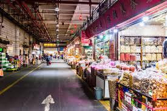

পাইকারি বাজার - 𝗣𝗮𝗶𝗸𝗮𝗿𝗶 𝗕𝗮𝘇𝗮𝗿
হ্যালো সবাইকে !

সবচেয়ে সাশ্রয়ী মূল্যে মানসম্মত পণ্য কোথায় পাবেন ? - এই অত্যন্ত গুরুত্বপূর্ণ প্রশ্নের উত্তরই বিশদভাবে আলোচনা করা হয়েছে এই ওয়েবসাইটটিতে।
ডিজিটাল যুগের আশীর্বাদে ব্যবসা-বাণিজ্য পরিচালনা এখন আগের চেয়ে অনেক সহজ হয়ে উঠেছে। বিশেষ করে, সামাজিক যোগাযোগ মাধ্যমকে কাজে লাগিয়েই প্রতিদিন অসংখ্য ক্ষুদ্র ব্যবসা আত্মপ্রকাশ করছে। চাকরির বাজারে তীব্র প্রতিযোগিতার মুখে তরুণসমাজও এখন ব্যবসার সম্ভাবনাময় জগতের দিকে ঝুঁকছে।
ব্যবসা করার মতো পণ্যের সম্ভারও বিশাল। তবে, কোন পণ্য নিয়ে ব্যবসা করবেন, তা নির্ধারণের আগে সময়, স্থান এবং বাজারের চাহিদা ইত্যাদি বিষয়গুলো বিবেচনা করা প্রয়োজন।
কিন্তু ব্যবসা শুরু করার পরিকল্পনা করলেই প্রথম যে মৌলিক প্রশ্নটি উদ্যোক্তার মনে উঁকি দেয়, তা হলো – এই ব্যবসার জন্য পণ্য সংগ্রহ করা হবে কোথা থেকে? এটা বলাই বাহুল্য যে, পণ্যের ক্রয়মূল্য এবং বিক্রয়মূল্যের মধ্যে পার্থক্য যত বেশি রাখা যাবে, ব্যবসায় লাভের সম্ভাবনাও তত বাড়বে। অর্থাৎ, একদিকে যেমন সবচেয়ে কম দামে ভালো মানের পণ্য সংগ্রহ করতে হবে, তেমনি অন্যদিকে তা যথাসম্ভব আকর্ষণীয় মূল্যে বিক্রি করার দক্ষতাও অর্জন করতে হবে।
🔔 সতর্কতা :
এই বইতে উল্লেখ করা স্থান, বাজার এবং দোকানগুলোর সাথে আমাদের কোনো প্রত্যক্ষ বা পরোক্ষ সম্পর্ক নেই। আমরা শুধুমাত্র বিভিন্ন পাইকারি বাজার পরিদর্শন করে তথ্য সংগ্রহ করেছি এবং তা এখানে উপস্থাপন করেছি।
📌 লেনদেনের ক্ষেত্রে সতর্কতা অবলম্বন করুন :
যদি আপনি কোনো দোকানের সাথে লেনদেন করেন, তা আপনার ব্যক্তিগত দায়িত্বে করবেন। ফোনে যোগাযোগ করে বিকাশ বা নগদের মাধ্যমে টাকা পাঠানোর ক্ষেত্রে প্রতারণার শিকার হলে আমরা তার জন্য দায়ী থাকবো না।
🧠 বাজারে সতর্ক থাকুন :
বিভিন্ন বাজারে ঘোরার সময় অনেক লোক আপনার সাথে কথা বলতে আসবে। তাদের মধ্যে অনেকেই দালাল হতে পারে, যারা কমিশনের লোভে আপনাকে ভুল দোকানে নিয়ে যেতে পারে। তাই সকলের সাথে সাবধানে কথা বলুন এবং যাচাই-বাছাই করে সিদ্ধান্ত নিন।
🛍️ সঠিক দোকান বাছাই করুন :
পাইকারি বাজারে গেলেই যে আপনি সরাসরি পাইকারি দামে মাল পাবেন—তা নয়। আপনাকে নিজেই পর্যবেক্ষণ করে বুঝতে হবে কোন দোকান আসলেই পাইকারি সরবরাহ করে। তাই একটি বাজারে ঢুকেই দ্রুত সিদ্ধান্ত না নিয়ে, পুরো মার্কেট ঘুরে ঘুরে দেখে তারপর সঠিক দোকান নির্ধারণ করুন।
বোরকা - Borka
বোরকা - Borka

ঢাকার কালিগঞ্জ, রানীগঞ্জে (ঢাকা ১৩১০) বোরকার সর্ববৃহৎ পাইকারি বাজার রয়েছে। দেশি-বিদেশি সব ধরনের ডিজাইনের বোরকা এখানে পাইকারি দামে কেনা-বেচা করা হয়। দাম ২০০/২৫০ টাকা থেকে শুরু করে সব রকম দামের মধ্যেই বোরকা পাওয়া যায়।
📍 এখানে রেডিমেড বোরকার অন্যতম মার্কেট হলো: আলম মল মার্কেট (২য় তলা)
📍 আরেকটি অন্যতম মার্কেট হলো: এস.আর. শপিং মল (২য় তলা) (বোরকার জন্য সেরা)
বোরকার জন্য অবশ্যয় পুরান ঢাকার ইসলামপুরও যেতে পারেন।
যারা চট্টগ্রামের দিকে রয়েছেন তারা চট্টগ্রামের টেরি বাজার থেকে বোরকা সোসিং করতে পারেন।
পাঞ্জাবি - Panjabi
পাঞ্জাবি - Panjabi

ছেলের পোশাকের মধ্যে আকর্ষণীয় কেনাকাটার জন্য পাঞ্জাবি একটি ভালো অপশন। আপনি যদি পাঞ্জাবি পাইকারি দামে কিনতে চান, তাহলে প্রথমেই চলে যেতে হবে সদরঘাট, ঢাকা-১৩০০।
📍 সদরঘাটে পাঞ্জাবির অন্যতম মার্কেট হলো : শরীফ মার্কেট
📍 সদরঘাটের কাছেই আরেকটি জায়গা হলো: মুন কামরুন্নেসা - 2nd Floor
এখান থেকে দেশি-বিদেশী পাঞ্জাবি, শেরওয়ানি এবং পাঞ্জাবি তৈরির থান কাপড় পাইকারিতে সোসিং করতে পারবেন।
তবে আপনি সদরঘাট পার হয়ে কেরানীগঞ্জ (ঢাকা-১৭০০) থেকেও পাঞ্জাবি সোসিং করতে পারেন।
📍 কেরানীগঞ্জে পাঞ্জাবির অন্যতম মার্কেট হলো: এস.আর. শপিং মল
📍 কেরানীগঞ্জে আরেকটি পাইকারি পাঞ্জাবির মার্কেট: আলম মল মার্কেট
পাঞ্জাবি, পাজামা, জুব্বার গজ ও থান কাপড়ের আরেকটি অন্যতম স্থান হচ্ছে "বাবুরাহাট, কাটানিল পট্ট"।
যারা চট্টগ্রামের দিকে রয়েছেন তারা চট্টগ্রামের টেরি বাজার থেকে পাঞ্জাবি সোসিং করতে পারেন।
শার্ট, প্যান্ট, থান কাপড় - Shirts, Pants, Fabric
শার্ট, প্যান্ট, থান কাপড় - Shirts, Pants, Fabric
শার্ট, প্যান্ট, স্যুট তৈরির সব ধরনের থান কাপড়ের অন্যতম পাইকারি বাজার হলো ইসলামপুর, ঢাকা-১১০০।
📍 এখানে অন্যতম একটি মার্কেট হলো: চায়না মার্কেট
📍 এখানে আরেকটি অন্যতম মার্কেট: লায়ন টাওয়ার (Ground Floor)
📍 আরও একটি মার্কেট: ইসলামপুর প্লাজা (Ground Floor)
দেশের আরেকটি অন্যতম পাইকারি বাজার সেখেরচর-বাবুরাহাট। শার্ট, প্যান্ট, সু্যটার তৈরির থান কাপড় পাবেন এই ঠিকানায়: সেখেরচর, বাবুনারহাট প্ল্যাজা রোড
যারা চট্টগ্রামের দিকে রয়েছেন তারা চট্টগ্রামের টেরি বাজার থেকে সোসিং করতে পারেন।
রেডিমেড শার্ট - Ready-made Shirt
রেডিমেড শার্ট - Ready-made Shirt
শার্টের কয়েকটি ক্যাটাগরি রয়েছে। আপনি যদি গড় দামে রেডিমেড শার্ট পাইকারিতে কিনে ব্যবসা করতে চান, তাহলে কেরানীগঞ্জ চলে যান।
📍 কেরানীগঞ্জে রেডিমেড শার্টের অন্যতম একটি মার্কেট: নুর সুপুর মার্কেট (কালিগজ্ঞ, চৌধুরী নগর দক্ষিণ)
ব্যান্ডেড রেডিমেড শার্ট যেমন - 'Easy', 'Plus point' এবং এরকম যত ব্যান্ড রয়েছে, এগুলো আপনি অন্য কোথাও পাবেন না, সরাসরি ব্র্যান্ডের সাথে কথা বলতে হবে।
উচ্চমানের ইন্ডিয়ান শার্টগুলোর তেমন পাইকারি বাজার নেই, তবে বছরে একবার বাণিজ্য মেলা বসে, সেখান থেকে আপনি ইন্ডিয়ান স্টল ম্যানেজারদের সাথে কথা বলে ইন্ডিয়ান শার্ট-প্যান্ট, থ্রি-পিস, লেহেঙ্গা, শেরওয়ানি ইত্যাদি পণ্যের লিংক তৈরি করে নিতে পারেন।
তবে সবচেয়ে ভালো হয় আপনি যদি "ইসলামপুর" থেকে শার্টের কাপড় কিনে কোনো গার্মেন্টস থেকে বানিয়ে নিতে পারেন।
রেডিমেড টি-শার্ট - Ready-made T-shirt
রেডিমেড টি-শার্ট - Ready-made T-shirt
টি-শার্ট খুবই দ্রুত বৃদ্ধি পাকে এবং এর ব্র্যান্ডগুলো অনেক জায়গায় পাইকারিভাবে কাজ করছে। আপনি এই ব্যবসা সহজেই করতে পারেন। ঢাকার মধ্যে টি-শার্টের ক্ষেত্রে সবচেয়ে নামকরা পাইকারি বাজার হলো গুলিস্তান।
📍 গুলিস্তানে অন্যতম কয়েকটি মার্কেট:
ট্রেড সেন্টার
সিদ্দিক প্ল্যাজা (guessed from "সিব্বির")
বলিসাল
নগর টাওয়ার
📍 বন বাজার: যারা সাধারণ টি শার্ট খুঁজছেন তাদের জন্য আদর্শ জায়গা।
বন বাজার গুলিস্তান প্লাজার কাছেই অবস্থিত। গুলিস্তান থেকে সহজেই যাওয়া যায়।
📍 টি শার্ট পাইকারি বাজার (উচ্চমান): "কামরুন সরিদ মার্ভেল কমপ্লেক্স"
এখানে উচ্চমানের টি শার্ট পাওয়া যায়। ডায়মন্ড সাংগ্রাম সহ বিভিন্ন ব্র্যান্ডের টি শার্ট পাওয়া যায়।
📍 স্টক লট: আজিকা সুপার" মার্কেট (তানাতাবাড়ী এলাকা, সাহবাগ, সাফ্রাবাদ)
অনেক সময় গার্মেন্টসের বাতিল হওয়া অথবা কাজ সম্পন্ন না হওয়ার কারণে স্টকলট পাওয়া যায়। এসব গার্মেন্টস মালিকেরা বিভিন্ন দামে স্টক লট সরবরাহ করে। স্টকলট কেনা কার্যকর উপায়।
গামছা,লুঙ্গি - Gamcha, Lungi
গামছা,লুঙ্গি - Gamcha, Lungi
গামছা এবং লুঙ্গির জন্য ভুলতোলা, রূপনগর, নারায়ণগঞ্জ হলো বিখ্যাত স্থান।
📍 ভুলতলার অন্যতম একটি মার্কেট হলো: গাঁওহিয়া সিটি মার্কেট
⚠️ সতর্কতা! অনেক মার্কেটে রাস্তা দেখা যায় যেগুলো পাইকারি বাজারের মতো দেখায়। তবে আসল পাইকারি বাজারে যেতে হলে সঠিক রাস্তা দিয়ে দিনের বেলায় যাওয়া ভালো।
📍 লুঙ্গির জন্য গাঁওহিয়া সিটি মার্কেটের গ্রাউন্ড ফ্লোরের দোকান: হাবিব ব্রাদার্স
📍 লুঙ্গির জন্য গাঁওহিয়া সিটি মার্কেটের গ্রাউন্ড ফ্লোরের দোকান: ক্লাসিক লুঙ্গি
📍 লুঙ্গির জন্য : মেসার্স লামিয়া এন্টারপ্রাইজ
📍 গামছা ও লুঙ্গি জন্য গাঁওহিয়া সিটি মার্কেটের ২য় তলায়: মেসার্স ফায়সাল গার্মেন্টস
📍 লুঙ্গি ও গামছা পাইকারি করার আরও একটি স্থান: বাবুপারহাট, মছিদ রোড, গামছা পট্টি (শেখরচর, নরসিংদী)
এছাড়াও ঢাকার ইসলামপুর থেকেও লুঙ্গি পাইকারি সোসিং করতে পারেন।
যারা চট্টগ্রামের দিকে রয়েছেন তারা রিয়াজুদ্দিন বাজার থেকেও লুঙ্গি, গামছা সোসিং করতে পারেন। (রিয়াজুদ্দিন বাজার অনেক বড়, তাই ওয়েবসাইটে লিঙ্ক অনুসরণ করুন)।
থ্রি-পিস - Three-Piece
থ্রি-পিস - Three-Piece
বর্তমানে বাংলাদেশে উদ্যোক্তাদের অন্যতম একটি আগ্রহের জায়গা হলো থ্রি-পিস। তাই বাংলাদেশে অনেক জায়গায় থ্রি-পিস পাইকারি বাজার গড়ে উঠেছে। যদি কম দামে সব ধরনের থ্রি-পিস পাইকারি কিনতে চান, তাহলে আপনাকে চলে যেতে হবে পুরান ঢাকার ইসলামপুর।
📍 ইসলামপুরে থ্রি-পিসের অন্যতম পাইকারি মার্কেট: লায়ন টাওয়ার (১০৪, ইসলামপুর রোড, ঢাকা-১১০০)
📍 আরেকটি উল্লেখযোগ্য মার্কেট: বাবলু ইসলামপুর কমপ্লেক্স (২নং ওয়াডার্ট রোড, ঢাকা)
এছাড়া বাংলাদেশের আরেকটি অন্যতম কাপড়ের বাজার বাবুরাহাটেও রয়েছে থ্রি-পিসের সমারোহ, ঠিকানা: বাবুপারহাট, ঘুমকেতুএর মাঠ
📍 বাবুরহাটে থ্রি-পিসের আরেকটি উল্লেখযোগ্য মার্কেট: লেক টাওয়ার
যারা চট্টগ্রামের দিকে রয়েছেন তারা চট্টগ্রামের টেরি বাজার থেকে থ্রি-পিস সোসিং করতে পারেন।
প্রিন্টেড এবং এক রঙ্গের গজ কাপড়
প্রিন্টেড এবং এক রঙ্গের গজ কাপড় - Printed and Solid Color Fabric
বাংলাদেশে প্রিন্টেড এবং গজ কাপড়ের অন্যতম পাইকারি বাজার হিসাবে শেখরচরের বাবুরহাটাকেই ধরা হয়ে থাকে।
📍 বাবুরহাট বণিক সমিতির সাথে অবস্থিত স্থানটি (সকল এক রঙের গজ কাপড় এখানে সুলভ মূল্যে পাওয়া যাবে)
📍 সকল প্রকারের গজ কাপড় পাবেন বাবুরহাটের থ্রি-পিস পট্টিতে
📍 বাবুরহাটের ধুমকেতুর মাঠ নামে পরিচিত স্থানেও গজ কাপড় সুলভ মূল্যে বিক্রি হয়।
📍 গজ কাপড়ের আরেকটি পাইকারি বাজার: পুরাণ ঢাকার ইসলামপুর
যারা চট্টগ্রামের দিকে রয়েছেন তারা চট্টগ্রামের টেরি বাজার থেকে গজ কাপড় সোসিং করতে পারেন।
লিলেন থান কাপড়, গেবাডিং, ডেনিম, নেট কাপড়, জর্জেন্ট এবং যাবতীয় বোরকার থান কাপড়
লিলেন থান কাপড়, গেবাডিং, ডেনিম, নেট কাপড়, জর্জেন্ট এবং যাবতীয় বোরকার থান কাপড় - Linen, Gabardine, Denim, Net, Georgette & Borka Fabrics
লিলেন থান কাপড়, গেবাডিং, ডেনিম, নেট কাপড়, জর্জেন্ট এবং যাবতীয় বোরকার থান কাপড়ের জন্য সেরা জায়গা হলো: আহ্সান উল্লাহ রোড, নবাব বাড়ি, ইসলামপুর, ঢাকা-১১০০।
📍 এখানকার অন্যতম একটি মার্কেট: গুলশান আরা সিটি
📍 আরেকটি অন্যতম মার্কেট: শুভ্ররাজ টাওয়ার
📍 আরও একটি মার্কেট: আল ইসলাম কমপ্লেক্স - ১
📍 আরও একটি অন্যতম মার্কেট: বিক্রমপুর গার্ডেন সিটি
ছোট বাচ্চাদের জামা-কাপড় (৫-১৫ বছর)
ছোট বাচ্চাদের জামা-কাপড় (৫-১৫ বছর) - Small Children's Clothes (5-15 years)
বিভিন্ন বয়সের ছোট বাচ্চাদের জামা-কাপড়ের জন্য চলে যেতে হবে: সদরঘাট, ঢাকা-১৩০০।
📍 এখানে অন্যতম একটি মার্কেট: মিউনিসিপ্যাল হকার্স মার্কেট
📍 এখানে আরও দুটি মার্কেট: লস্কর পট্টি হকার্স মার্কেট এবং সিটি কর্পোরেশন হকার্স মার্কেট।
📍 আরেকটি অন্যতম মার্কেট: ইস্ট বেঙ্গল ইনস্টিটিউশন সুপার মার্কেট (২য় & ৩য় ফ্লোর)
ঠিকানা: ২নং চিত্তরঞ্জন এভিনিউ, সদরঘাট, ঢাকা-১৩০০
📍 এই মার্কেটে অন্যতম একটি দোকানের নাম: নুরপুর গার্মেন্টস (২য় তলায়)
ভুলতোলা, রূপনগর, গাঁওহিয়া সিটি মার্কেটের উপরে প্রতি মঙ্গলবার একটি হাট বসে। সেখানেও ছোট বাচ্চাদের জামা-কাপড় বিভিন্ন রকম কাপড় পাওয়া যায়।
জিন্স, গেবার্ডিং প্যান্ট, ট্রাউজার
জিন্স, গেবার্ডিং প্যান্ট, ট্রাউজার - Jeans, Gabardine Pants, Trousers
ঢাকার আদরের বুড়িগঙ্গা তীরের খেঁড়ে পড়ে ওটা কেরানীগঞ্জের পাইকারি বাজার। ডিলস, গেবার্ডিং প্যান্ট এবং ট্রাউজারের সবচেয়ে বড় পাইকারি বাজার। (পূর্ব আগানগর, দঃ কেরানীগঞ্জ, ঢাকা-১৩১০)
📍 প্রধান বাজারের ম্যাপ লিংক
এখানে অন্ততন কিছু মার্কেটের নাম এবং গুগল ম্যাপ লিংক দেওয়া হলোঃ
📍 তানাকা গার্মেন্টস মার্কেট
📍 টোকিও টাওয়ার (1st Floor)
কেরানীগঞ্জেই প্রোডাক্টের জন্য আরেকটি স্থানঃ কালীগঞ্জ, চৌধুরীনারায়ণ, দক্ষিণ কেরানীগঞ্জ, ঢাকা ১৩১০
এখানে অন্ততন কিছু মার্কেটের নাম এবং গুগল ম্যাপ লিংক দেওয়া হলোঃ
📍 নূর সুপার মার্কেট
📍 সাদ্দাম টাওয়ার
📍 রফিক টাওয়ার
📍 আল মদিনা টাওয়ার
📍 হাজী ফরহাদ চালী মার্কেট
📍 সেঞ্চুরি টাওয়ার
📍 রিফাত কমপ্লেক্স
Note: এখানে মার্কেট গুলো প্রায় সব একসাথে, গুগল ম্যাপ কাজ না করলেও পাশাপাশি মার্কেটের নাম অনুযায়ী খুঁজলেই পেয়ে যাবেন।
প্যান্ট তৈরির উপকরণ এবং থান কাপড়
প্যান্ট তৈরির উপকরণ এবং থান কাপড় - Pant Making Supplies and Fabric
মূলত কেরানীগঞ্জেই (পূর্ব আগানগর, দঃ কেরানীগঞ্জ, ঢাকা ১৩১০) আপনি বিভিন্ন রকমের প্যান্ট তৈরির থান কাপড় পেয়ে যাবেন এবং প্যান্ট তৈরির আরো যেসব উপকরণ লাগে সে কিছুতেই এখানে দেয়া। এখানকার উল্লেখযোগ্য কিছু মার্কেটের নাম নিচে উল্লেখ করা হলোঃ
📍 ইনসাফ মার্কেট(২য় এবং ৩য় তলায়)
📍 মাকসুদা গার্ডেন সিটি
📍 টোকিও টাওয়ার 2nd & 3rd Floor
প্যান্টের ইলাস্টিকের জন্য ইনসাফ মার্কেটের আশেপাশে অনেক দোকান রয়েছে এবং ইনসাফ মার্কেটের 1st তলায় ইলাস্টিক পাবেন।
📍 ইনসাফ মার্কেট (1st Floor)
প্যান্ট তৈরির সকল উপকরণের জন্য চলে যেতে পারেনঃ পূর্ব আগানগর, শহীদ দেলোয়ার হোসেন রোড, দঃ কেরানীগঞ্জ, ঢাকা-১৩০০
📍 এখানে অন্ততন একটি মার্কেটের নামঃ বিশ্বাসমিল্লাহ মার্কেট (নিচতলায়, ভিতরের দিকে)
তাছারা সকল প্রকার এমব্রুডায়রি সুতা প্রস্তুতকারক লাইনিং, রবিন সুতা, টোপ, টউল এবং গার্মেন্টস সকল প্রকার খুচরা মালামালের জন্য চলে যেতে পারবেনঃ নাগরমহল রোড, পূর্ব আগানগর, দঃ কেরানীগঞ্জ, ঢাকা-১৩১০
📍 এখানে অন্ততম একটি মার্কেটের নামঃ সম্রাট শাহজাহান টাওয়ার
রং ছাড়া কাপড় (গ্রে কাপড়)
রং ছাড়া কাপড় (গ্রে কাপড়) - Raw Fabric (Grey Fabric)
রং ছাড়া অথবা কোন প্রকার ছাপ ছাড়া কাপড় কিনতে হলে আপনাকে চলে যেতে হবে নরসিংদীর মাধবদীতে (পুলিশ ফাঁড়ি রোড এবং এর আশেপাশে)।
এখানে গ্রে কাপড়ের সুতার ডিলারদের সন্ধান পেতে আপনাকে যেতে হবেঃ ব্যাংক পট্টি, মাধবদী, নরসিংদী।
খেলাধুলার জার্সি, ট্রাউজার, সরঞ্জাম
খেলাধুলার জার্সি, ট্রাউজার, সরঞ্জাম - Sports Jerseys, Trousers, Equipment
সকল ধরনের খেলাধুলার জার্সি এবং ট্রাউজারের সর্ববৃহৎ পাইকারি মার্কেট হচ্ছেঃ সমবায় ট্রেইন টাওয়ার মার্কেট, ৪৩ বঙ্গবন্ধু এভিনিউ, ঢাকা-১০০০
📍 ক্রিকেট বল, ব্যাট এবং অন্যান্য খেলার সকল সরঞ্জামের জন্য "২য় তলা সেরা"
এখানে অন্ততম একটি দোকানের নামঃ একটাস স্পোর্টস (০১৭৯৫৪৬৮৩৬৫)
বিভিন্ন ধরনের ট্রফি, মেডেল, ক্রেস্ট জাতীয় প্রোডাক্টের জন্য অন্ততম একটি দোকানঃ গোল্ড স্পোর্টস এন্ড মেটালিক (০১৯২১২৩৮২০৮)
ক্রিকেট ব্যাটের জন্য বিভিন্ন ধরনের স্টিকারের জন্য অন্ততম একটি দোকানঃ এস.এস.এল খান স্পোর্টস (Shop No:4081- North Side, Third Floor-০১৮১৩৬৭৫৩৪)
এই ধরনের পণ্য চট্টগ্রাম থেকে সোর্সিং করতে চাইলে চলে যাবেনঃ রিয়াজুদ্দিন বাজার। এখানে অন্ততম একটি মার্কেটের নামঃ Nisha Plaza (নূপুর গলি, রিয়াজুদ্দিন বাজার, চট্টগ্রাম)
সুতা (Suta) - Thread or yarn
সুতা (Suta) - Thread or yarn
বাংলাদেশের মধ্যে অন্ততম একটি সুতার পাইকারি বাজার হচ্ছেঃ নারায়ণগঞ্জের, টানবাজার।
বাংলাদেশে আরো একটি অন্ততম পাইকারি সুতার বাজার অবস্থিত নরসিংদীর মাধবদীতে (সোনার বাংলা মার্কেট-সুতা পট্টি)
সার্জিক্যাল মাস্ক সহ সকল ধরণের মাস্ক
সার্জিক্যাল মাস্ক সহ সকল ধরণের মাস্ক - Surgical Mask and All Types of Masks
সার্জিক্যাল মাস্ক সহ সকল ধরনের মাস্ক পাইকারি তে সোর্সিং করতে চাইলে যেতে হবেঃ আব্দুল খলিল রোড (বাবু বাজার), ঢাকা-১১০০
যারা চট্টগ্রামের দিকে রয়েছেন তারা রিয়াজুদ্দিন বাজারের "গোলাম রসূল মার্কেট- নিচ তলা" থেকে বিভিন্ন ধরনের মাস্ক পাইকারিতে সোর্সিং করতে পারবেন।
লেইস/টার্সেল(ঝালর) - Lace/Tassel
লেইস/টার্সেল(ঝালর) - Lace/Tassel
লেইস এবং টার্সেলের বৃহত্তম পাইকারি বাজার অবস্থিত সদরঘাট, ঢাকা-১১০০
📍 এখানে লেইস/টার্সেলের অন্ততম একটি মার্কেটের নামঃ সিটি প্লাজা (৮/৬ চিত্তরঞ্জন এভিনিউ, সদরঘাট, ঢাকা-১১০০)
📍 এখানে অন্ততম একটি দোকানের নামঃ এম.এস শাহাদাত এন্টারপ্রাইজ (সিটি প্লাজা মার্কেট, শপ নংঃ ১৬, প্রথম তলায়, ফোনঃ ০১৫৯২৬২০৯০৯)
এখান থেকে বিভিন্ন ধরনের চুমকি, পুঁতিও সোর্সিং করতে পারবেন।
অন্যান্য গার্মেন্টস - Other Garments
অন্যান্য গার্মেন্টস - Other Garments
ঢাকা গুলিস্থান, সদরঘাট, ইসলামপুর, নিউ মার্কেট, গাউছিয়া মার্কেট পাইকারি মূল্যে লেডিস আদার্স গার্মেন্টস, তাছাড়াও আরো কিছু উল্লেখযোগ্য স্থানের নাম নিচে উল্লেখ করা হলো।
যারা চকবাজার থেকে সোর্সিং করতে চাচ্ছেন তারা চলে যাবেনঃ চক বাজার বানিজ্যিক সমিতি গলি, ৬/১ চকবাজার, ঢাকা-১২১১
বাংলাদেশের অন্যতম একটি কাপড়ের বাজার বাবুরাহাট থেকে ও সুলভ মূল্যে আদার্স গার্মেন্টস সোর্সিং করতে পারেন।
যারা চট্টগ্রামের দিকে রয়েছেন তারা রিয়াজুদ্দিন বাজার থেকে আদার্স গার্মেন্টস সোর্সিং করতে পারেন। অবশ্যই ম্যাপ অনুযায়ী যাবেন।
📍 এখানে আদার্স গার্মেন্টসের আরেকটি অন্ততম মার্কেটঃ গোলাম রসূল মার্কেট-নিচ তলা
শাড়ি - Saree
শাড়ি
📍 ইসলামপুর শাড়ির পাইকারি মার্কেট
- পুরান ঢাকায় অবস্থিত এই ইসলামপুর বাজার হলো বাংলাদেশের সবচেয়ে প্রাচীন এবং ঐতিহাসিক পাইকারি কাপড়ের বাজার।
শুক্রবার ছাড়া ও বিশেষ বন্ধের দিন ছাড়া বাকি দিন এই বাজার খোলা থাকে।
📍 নরসিংদী বাবুর হাট শাড়ির পাইকারি মার্কেট
- পাইকারি শাড়ি কাপড়ের আরেকটি বিখ্যাত মার্কেট হলো নরসিংদী বাবুর হাট।
এটা এক প্রক্ত শুধুমাত্র রবিবার কিছুটা কিন্তু ক্রেতাদের ব্যাপক চাহিদা থাকায় সপ্তাহো দুদিন শুক্ত ও পরিবার বসে এই হাট।
📍 টাঙ্গাইল শাড়ির পাইকারি মার্কেট
- টাঙ্গাইলের টাউের শাড়ি পৃথিবীখ্যাত। টাঙ্গাইল শাড়ির মধ্যে তুঁতি ও হাফসিফু শাড়ি রয়েছে।
টাঙ্গাইলের প্রাথরায় নামক স্থানে রয়েছে এই শাড়ির বাজার। বর্তমানে টাঙ্গাইল শাড়ির রাজধানী হিসেবে পরিচিতি এই প্রাথরাইল।
📍 ডেমরার জামদানি হাট
- এই হাটটা সপ্তাহে শুধু শুক্রবার বসতি এসে ডেমরার শীতলক্ষা নদীতট্যে বিষয়ক শিল্পনগরী এলাকায়।
এই হাটের সময়কাল খুব বেশি একটি থাকো না। তাই একদম শুক্ত ওবার দিকে ভালো।
📍 রাজশাহী সিল্ক শাড়ির পাইকারি মার্কেট
- রাজশাহীর সাপুরা এলাকায় গড়ে উঠেছে এই সিল্ক শাড়ি তৈরির কারখানা। কম দামে শাড়ি বেচতে হলে চলে আসাতে হবে রাজশাহী।ই এই সাপুরা এলাকায়।
📍 সিলেট এর মনিপুরি শাড়ির পাইকারি মার্কেট
- সিলেটের লালামবাজারে তৈরি হয়েছে এই মনিপুরি কাপড়ের বিশাল বাজার।
সরাসরি তাতের্র কাছ থেকে এখানে মনিপুরি শাড়ি ক্রয় করা যায়।
বেডশিট এবং সব ধরনের দরজা, জানালার পর্দা - Bedsheets and All Types of Doors, Window Curtains
বেডশিট এবং সব ধরনের দরজা, জানালার পর্দা
বিভিন্ন ধরনের ফর্সি, গোলেন ফোর, বেডশিট, কুশন কাপড়ের জন্য বাংলাদেশি বড় পাইকারি বাজার ইসলামপুর, ঢাকা-১১০০
📍 এখানে অন্ততম কিছু মার্কেটের নামঃ
📍 করিম প্লাজা (ঢাকা টাওয়ার ৫), ইসলামপুর, ঢাকা ১১০০
📍 জাহাঙ্গীর টাওয়ার
📍 জিয়া কমপ্লেক্স
এছাড়া বাংলাদেশের আরেকটি অন্ততম স্থান বাবুরাহাট থেকেও এ ধরনের পণ্য সোর্সিং করতে পারেন।
বাবুরাহাট, বেনিটি পট্টিতে এ ধরনের পণ্য পাবেন (ম্যাপ অনুযায়ী যেতে পারেন)
📍 এখানে মশারি র জন্য অন্ততম স্থানঃ বাবুরাহাট, মশারি পট্টি
বাবুরাহাট লেন, ভোজক, জাজিমের কাজের জন্য যেতে হবেঃ সাত তলা মোড়
বাবুরাহাট পট্টি, মোকাম ফোর, বেডশিট, কুশন কাপড়ের জন্য আরেকটি অন্যতম স্থান সাত তলা মোড় (একটু ভিতরের দিক)।
📍 আরেকটি স্থানঃ
📍 এখানে অন্ততম একটি দোকানের নামঃ রিফাত ক্লথ স্টোর (০১৭৮৯৪৮৩২৭৫-imo)
📍 এখানে কম্বলের জন্য যেতে হবেঃ হাজী জহির আলী মার্কেট
📍 সালু কাপড় (লেপওড় করার জন্য সাধারণত যে কাপড় ব্যবহার করা হয়) এবং ফাকিং কাপড় (তোশওড় করার কাপড়)
এই কাপড়গুলো বাবুরাহাটের নিচের ম্যাপ অনুযায়ী গেলেই পেয়ে যাবেন।
যারা চট্টগ্রামের দিকে রয়েছেন তারা বেডশিট, বিভিন্ন রকম পর্দা, কুশন, সোফার কাপর রিয়াজুদ্দিন বাজার থেকে সোর্সিং করতে পারবেন।
📍 এখানে অন্ততম একটি মার্কেটের নামঃ শাহজালাল মার্কেট
ইসলামিক গ্রন্থাবলী - Islamic Books
ইসলামিক গ্রন্থাবলী - Islamic Books
জায়নুমাজ, তজবি, কায়দা, আমপারা, ঠুপা, হাফেজী কোরআন, হাসিয়াফ, রুসুসি ইসলামিক গ্রন্থাদি অষ্টকলসহ যে কোনো ধরনের ইসলামিক গ্রন্থাদি পাইকারি দামে কিনতে পারবেন।
📍 এগুলোর পাইকারি সোর্সিং এর জন্য ঢাকার এই ঠিকানায় যেতে হবে: ৫৫/৭৪ বড় সার্কিলার রোড, চক্ বাজার, ঢাকা-১১০০।
📍 যারা চট্টগ্রামের দিক থেকে আসেন, তারা রিয়াজুদ্দিন বাজার থেকে ইসলামিক গ্রন্থাদি সংগ্রহ করতে পারেন।
📍 এখানকার অন্যতম একটি সার্ভিস হলো: হাজী গোলাম রাসুল মার্কেট (ফটওয়ালি)।
সব ধরণের বই - All types of books
সব ধরণের বই - All types of books
ধর্মীয় বই, ছোটদের কার্টুন বই, গ্রাফিকের বই এবং পাঠ্যবই সংক্রান্ত সমস্ত বই এবং উপন্যাসসহ সব ধরনের বই পাইকারি দামে পাওয়া যায়।
📍 এগুলোর জন্য প্রধান স্থান হলো: বাংলা বাজার, ঢাকা ১১০০।
📍 এখানে একটি অন্যতম বইয়ের দোকান হলো: ০/১ বাংলাবাজার, পিপি মার্কেট, ঢাকা-১১০০।
সব সাইজের কাগজ - Paper
সব সাইজের কাগজ - Paper
সব সাইজের কাগজ পাইকারি মূল্যে কিনতে চাইলে যেতে হবে: কুমারটেক লেন (নবাব ইউসুফ রোড), আরামবাগী, ঢাকা-১০০।
📍 এখানে অন্যতম একটি কাগজ সরবরাহকারী এবং ইমপোর্ট-এক্সপোর্টের অন্যতম সেন্টার নাম: গ্লোবাল ট্রেড সেন্টার।
📍 সব সাইজের খাতা, ডায়েরি, কাগজের জন্য আরও একটি অন্যতম স্থান হলো: ৫২, হাকিম হাবিবুর রহমান রোড, চকবাজার, ঢাকা-১২১১।
📍 এখানকার অন্যতম একটি সেলার এর নাম: তুরাইয়া ট্রেডিং।
কলম - Pens
কলম - Pens
বাংলাদেশে কলমের সবচেয়ে বড় পাইকারি আড়ত হলো চকবাজার, ঢাকা। এছাড়া, আপনি চাইলে এখান থেকে বিভিন্ন ধরনের বই, খাতা সহ সংগ্রহ করতে পারেন।
📍 এখানকার ঠিকানা: চকবাজার, ঢাকা।
📍 এছাড়াও চট্টগ্রামের রিয়াজুদ্দিন বাজারের (গোলাম রাসুল মার্কেট) থেকেও কলম সংগ্রহ করতে পারেন।
জালি ব্যাগ - Net Bag
জালি ব্যাগ - Net Bag
যেসব জালি ব্যাগ দিয়ে সাধারণত বাজার সদাই বহন করা হয়, সেসব জালি ব্যাগের অনেক কারখানা রয়েছে দেশের অনেক প্রান্তে।
📍 তবে জালি ব্যাগ সোর্সিং করার অন্যতম একটি স্থান হলো: তুলতা, রূপগঞ্জ (গাউছিয়া সিটি মার্কেটের নিচে)।
📍 এখানে অন্যতম একটি সেলস সেন্টারের নাম: শাহীন নেট ব্যাগ।
ভ্যারাইটিজ পণ্য-সামগ্রী - Variety Goods
ভ্যারাইটিজ পণ্য-সামগ্রী - Variety Goods
ব্রাশ, টুথপিক, চিরুনি, নেইল কাটার, সুঁইসহ যত ছোটখাটো পণ্য সামগ্রীর প্রয়োজন হয় এসব কিছু পাইকারিভাবে সোর্সিং করতে হলে আপনাকে যেতে হবে ঢাকার চকবাজারে।
📍 এসব পণের জন্য অন্যতম একটি মার্কেটের নাম: মোহাম্মদ আলি মার্কেট (১৮৮, মোগলটুলী, ঢাকা-১২১৯)।
ক্রোকারিজ আইটেম - Crockery Items
ক্রোকারিজ আইটেম - Crockery Items
রাইস কুকার, ফ্রাই প্যান, প্রেশার কুকার, রুটি মেকার সহ যাবতীয় ক্রোকারিজ আইটেম ও কিচেন পণ্য এবং সকল অনলাইন ভিত্তিক বিক্রিত পণ্য পাইকারি সোর্সিং করতে পারবেন ঢাকার চকবাজার থেকে।
📍 ক্রোকারিজ আইটেমের অন্যতম একটি মার্কেটের নাম: বিসমিল্লাহ টাওয়ার (১৪৭-১৪৮ মিডফোর্ড রোড, ঢাকা-১২১১)।
📍 এখানে অন্যতম একটি এক্সক্লুসিভ সেলস সেন্টারের নাম: শাহী ইন্টারন্যাশনাল (বিসমিল্লাহ টাওয়ার-৫ম তলা)।
মেলামাইন পণ্য - Melamine Products
মেলামাইন পণ্য - Melamine Products
মেলামাইনের যাবতীয় পণ্য এবং ক্রোকারিজ আইটেম পাইকারি সোর্সিং এর একটি অন্যতম স্থান হলো: মিডফোর্ড রোড (শরীফ মেলামাইন হেড অফিসের সাথে) ঢাকা-১১০০।
📍 ঠিকানা: মিডফোর্ড রোড (শরীফ মেলামাইন হেড অফিসের সাথে) ঢাকা-১১০০।
অ্যালুমিনিয়াম হাঁড়ি/পাতিল - Aluminum Pots/Pans
অ্যালুমিনিয়াম হাঁড়ি/পাতিল - Aluminum Pots/Pans
ছোট বড় সব সাইজের অ্যালুমিনিয়ামের হাঁড়ি, পাতিল, কড়াই ইত্যাদি পণ্যের পাইকারি সোর্সিং করতে হলে, চলে যেতে হবে: মিডফোর্ড রোড, ঢাকা-১১০০।
📍 ঠিকানা: মিডফোর্ড রোড, ঢাকা-১১০০।
প্লাস্টিকের যাবতীয় পণ্য - Plastic Products
প্লাস্টিকের যাবতীয় পণ্য - Plastic Products
সব ধরনের প্লাস্টিকের পণ্য অথবা হোম এপ্লায়েন্সেস এর জন্য আপনাকে যেতে হবে: জুম্মন ব্যাপারী লেন (নলগোলা) মিডফোর্ড, ঢাকা-১১০০।
📍 এখানে অন্যতম একটি সেলস সেন্টারের নাম: বিসমিল্লাহ প্লাস্টিক হাউস।
কাচ/সিরামিকের কিচেন পণ্য সামগ্রী
কাচ/সিরামিকের কিচেন পণ্য সামগ্রী - Glass/Ceramic Kitchenware
সব ধরনের কাচ এবং সিরামিকের কিচেন সামগ্রী (ডিনার সেট, থালাবাসন, গ্লাস ইত্যাদি) আইটেমের জন্য পাইকারি সোর্সিং করতে আপনাকে যেতে হবে: মিটফোর্ড, ঢাকা-১১২০০
📍 ঢাকা: এই ধরনের পণ্যের পাইকারি বাজারের প্রধান কেন্দ্র মিটফোর্ড, ঢাকা-১১২০০।
📍 চট্টগ্রাম: যারা চট্টগ্রামে রয়েছেন তারা রিয়াজুদ্দিন বাজার থেকে সোর্সিং করতে পারবেন।
📍 চট্টগ্রামে অন্যতম মার্কেট: গোলাম রসুল মার্কেট (অবশ্যই ৩য় তলায় যাবেন)।
পাটা-পুতা,চেকবল - Mortar & Pestle, Checkball
পাটা-পুতা,চেকবল - Mortar & Pestle, Checkball
পাটা-পুতা, চেকবল এবং এই ধরনের সকল পণ্যের অন্যতম একটি পাইকারি বাজার: ঢাকা-১২০০, ২৪/২ ইমামগঞ্জ বাজার লেন
📍 এখানে অন্যতম একটি মার্কেটের নাম: মোহাম্মদ আলী মার্কেট।
📍 এখানে অন্যতম একটি দোকান: মেসার্স দূর্গা হার্ডওয়্যার স্টোর।
কাস্টমাইজড বয়ম/বক্স - Customized Jars/Boxes
কাস্টমাইজড বয়ম/বক্স - Customized Jars/Boxes
আমরা যারা নিজে নিজে ফুড আইটেম অথবা অনুষঙ্গ প্রডাকশন করে বাজারে বিক্রি করতে যাই, তখন অনেক সাইজের বয়ম বা বাক্সের প্রয়োজন হয়। এ ধরণের সকল পণ্য পাইকারি সোর্সিং করতে পারবেন: ১৪/২০ মিটফোর্ড রোড, ঢাকা-১১২০০।
📍 এসব বয়মের জন্য আরেকটা স্থান: জুমন বেপারী লেন (নলগোলা), মিটফোর্ড, ঢাকা-১১২০০।
📍 চট্টগ্রাম: যারা চট্টগ্রামের ওদিকে রয়েছেন তারা রিয়াজুদ্দিন বাজার থেকে সোর্সিং করতে পারবেন।
📍 চট্টগ্রামে অন্যতম মার্কেট: গোলাম রসুল মার্কেট (1st floor)।
কাস্টমাইজড স্টিকার/ব্যাগ/বক্স
কাস্টমাইজড স্টিকার/ব্যাগ/বক্স - Customized Sticker/Bag/Box
সব ধরনের কফি মগ (ফটো মগ আর প্রিন্ট মগ), টিস্যু বক্স, গিফট মগ, সব ধরনের কাগজের মগ, সব ধরনের খাবারের প্লাস্টিকের ব্যাগ, কফি এবং পাউডার জন্য প্লাস্টিক বয়ম, আরও বিভিন্ন পণ্য নিতে আপনাকে যেতে হবে: ইয়াকুব আলী মোল্লা রোড, নওয়াবগিয়া, ঢাকা-১১০০।
📍 চট্টগ্রাম: যারা চট্টগ্রামের ওদিকে রয়েছেন তারা রিয়াজুদ্দিন বাজার থেকে সোর্সিং করতে পারবেন।
📍 চট্টগ্রামে অন্যতম মার্কেট: গোলাম রসুল মার্কেট (1st floor)।
কার্টুন বক্স এবং ফ্ল্যাইবোর্ড
কার্টুন বক্স এবং ফ্ল্যাইবোর্ড - Cartoon Box and Plywood
আমাদের বিজনেসে বিভিন্ন সাইজের কার্টুন বক্স প্রয়োজন হয়। এসব কার্টুন বক্স এবং সব সাইজের ফ্ল্যাইবোর্ড সোর্সিং করতে চাইলে সবার আগে যাবেন: নয়া বাজার (ডি.আই.টি মার্কেট) ঢাকা-১১২০০।
📍 এখানে অন্যতম কয়েকটি মার্কেটের নাম: ডি.আই.টি মার্কেট, মিউনিসিপালিটি মার্কেট, নবাব ইউসুফ মার্কেট।
এই মার্কেটগুলোর নিচতলায় সব ধরণের ফ্ল্যাইবোর্ড পাবেন এবং উপর তলা গুলো থেকে কার্টুন সোর্সিং করতে পারবেন।
📍 তাছাড়াও চকবাজারের বিসমিল্লাহ টাওয়ারের সিহাবের গলির কান্সপিট থেকে আপনার পছন্দ মতো কার্টুন সোর্সিং করতে পারবেন।
শো-পিস - Showpiece
শো-পিস - Showpiece
যত ধরনের দেশি-বিদেশি শো-পিস রয়েছে, প্রায় সব ধরনের শো-পিস আপনারা পাইকারিতে সোর্সিং করতে পারবেন: ১৪৭-১৪৮ মিটফোর্ড রোড, ঢাকা-১২০০।
📍 এখানে অন্যতম একটি মার্কেটের নাম: বিসমিল্লাহ টাওয়ার (সব ধরনের শো-পিসের জন্য ৩য় তলায় যাবেন)।
📍 চট্টগ্রাম: যারা চট্টগ্রামের ওদিকে রয়েছেন তারা রিয়াজুদ্দিন বাজার থেকে সোর্সিং করতে পারবেন।
📍 চট্টগ্রামে অন্যতম মার্কেট: গোলাম রসুল মার্কেট (অবশ্যই ৩য় তলায় যাবেন)।
আর্টিফিশিয়াল ফুল এবং ডেকোরেশন পণ্য
আর্টিফিশিয়াল ফুল এবং ডেকোরেশন পণ্য - Artificial Flowers & Decoration Items
আর্টিফিশিয়াল ফুল এবং ডেকোরেশনের অনেক ধরনের পণ্য সামগ্রী পাইকারিতে সোর্সিং করতে হলে আপনাকে যেতে হবে: বিসমিল্লাহ টাওয়ার (১৪৭-১৪৮ মিটফোর্ড রোড, ঢাকা-১২০০), ৩য় তলায়।
📍 ঢাকা: বিসমিল্লাহ টাওয়ার, ১৪৭-১৪৮ মিটফোর্ড রোড, ঢাকা-১২০০ (৩য় তলা)।
গায়ে হলুদ/বিয়ে/জন্মদিনের আইটেম
গায়ে হলুদ/বিয়ে/জন্মদিনের আইটেম - Gaye Holud/Wedding/Birthday Items
আমাদের দেশে বিভিন্ন ধরনের অনুষ্ঠানে (গায়ে হলুদ/বিয়ে/জন্মদিন) যেসব আইটেম প্রয়োজন হয়, প্রায় সব কিছুই পাইকারিতে সোর্সিং করতে পারবেন ঢাকা, চকবাজার থেকে।
📍 ঢাকা: এখানে অন্যতম একটি স্থানের নাম: হাজী সালমান ভবন, চক সার্কুলার রোড, ঢাকা।
📍 এখানে অন্যতম একটি দোকান: জাভেদ সাজ ঘর।
📍 চট্টগ্রাম: যারা চট্টগ্রামের ওদিকে রয়েছেন তারা রিয়াজুদ্দিন বাজার থেকে এসব পণ্য পাইকারিতে সোর্সিং করতে পারবেন।
📍 এই ধরণের অন্যতম একটি মার্কেটের নাম: গোলাম রসুল মার্কেট (নিচ তলায়)।
বেবী আইটেম - Baby Items
বেবী আইটেম - Baby Items
বাচ্চাদের ডায়াপার, মোবাইল এক্সেসরিজ, বিভিন্ন গ্যাজেট এবং প্রয়োজনীয় সকল নন-স্টক আইটেম, প্রায় সব কিছু পাইকারি দামে সোর্সিং করা যায় ঢাকা, চকবাজার থেকে।
📍 ঢাকা: এখানে অন্যতম একটি মার্কেট: আলমোদারাজা টাওয়ার (সব তলায় এবং সব বেবী আইটেম পাওয়া যায়), চকবাজার, ঢাকা-১২০০।
📍 এখানে বেবী আইটেমের অন্যতম একটি বিখ্যাত শপের নাম: মদিনা বেবী স্টোর (আলমোদারাজা টাওয়ার, ফ্লাট-২)।
বাচ্চাদের দেশি-বিদেশি খেলনা - Baby Toys
বাচ্চাদের দেশি-বিদেশি খেলনা - Baby Toys
বাচ্চাদের সব ধরনের খেলনার জন্য বাংলাদেশের সবচেয়ে বড় পাইকারি বাজার ঢাকার চকবাজার।
📍 ঢাকা: দেশি-বিদেশি সব ধরনের খেলনার অন্যতম পাইকারি মার্কেট: বিসমিল্লাহ টাওয়ার (১৪৭-১৪৮ মিটফোর্ড রোড, ঢাকা-১২০০)। খেলনার জন্য অবশ্যই এই মার্কেটের ৪র্থ তলায় যাবেন।
📍 চট্টগ্রাম: দেশি-বিদেশি খেলনার জন্য অন্যতম একটি মার্কেট: জলসা মার্কেট, স্টুডিও গলি, মেইন রোড, রিয়াজুদ্দিন বাজার, চট্টগ্রাম।
হার্বাল পণ্য - Herbal Goods
হার্বাল পণ্য - Herbal Goods
হার্বেল মালের জন্য বাংলাদেশের সবচেয়ে বৃহত্তম পাইকারি বাজার: ১৭১/২ নং মেয়াদীঘাট, চকবাজার, ঢাকা-১২১১।
📍 এখানে অন্যতম একটি দোকানের নাম: মেসার্স রিতু এন্টারপ্রাইজ
মাটির তৈজসপত্র - Clayware
মাটির তৈজসপত্র - Clayware
ঢাকায় এবং চট্টগ্রাম অনেক পাইকারি বাজারে মাটির তৈরি বিভিন্ন ধরনের জিনিসপত্র পাওয়া যায়। তবে আপনি যদি সিরিয়াসলি এই বিজনেস করতে চান তাহলে আপনাকে চলে যেতে হবে বরিশালে। বরিশালের বাকেরগঞ্জ, আগৈলঝাড়া, গৌরনদী, বানারীপাড়া, উজিরপুর উপজেলায় গেলে আপনি অনেক কম দামে বিভিন্ন মাটির জিনিসপত্র সোর্সিং করতে পারবেন।
বাঁশের তৈরি সামগ্রী - Bamboo Products
বাঁশের তৈরি সামগ্রী - Bamboo Products
বাঁশের তৈরি চালন, চাংরা, উরা, কুলা, দোলনা, মাছ ধরার পলো, চাইসহ নানান ধরনের সামগ্রী সোর্সিং করতে চাইলে চলে যেতে পারেন: মুন্সিগঞ্জের শ্রীনগর উপজেলায়।
পারফিউম - Perfume
পারফিউম - Perfume
দেশে সবচেয়ে বেশি পারফিউম, বডি স্প্রে ও আতরের দোকান রয়েছে রাজধানীর মিটফোর্ড এলাকায়। বাবু বাজার মোড় থেকে মিটফোর্ড হাসপাতাল পর্যন্ত পথের দুই ধারে পারফিউম আর রাসায়নিকের দোকান রয়েছে দেড় শতাধিক। যেখানে ১৮০ টাকা থেকে শুরু করে সর্বোচ্চ মূল্যের পারফিউম সংগ্রহে রাখা হয়।
সোনা-রূপা - Gold-Silver
সোনা-রূপা - Gold-Silver
শাঁখারী বাজারের সাথেই (কোতোয়ালি রোড, তাঁতীবাজার, ঢাকা-১১০০)। এখানে বিভিন্ন ডিজাইনের গহনা এবং সোনা, রূপা ক্রয় বিক্রয় হয়ে থাকে।
সানগ্লাস/চশমা - Sunglasses/Eyeglasses
সানগ্লাস/চশমা - Sunglasses/Eyeglasses
সব বয়সের দেশি-বিদেশি সানগ্লাস/চশমার সবচেয়ে বৃহত্তম পাইকারি বাজার আব্দুল্লাহপুর, ঢাকা-১১০০।
📍 এখানে অন্যতম একটি মার্কেটের নাম: মুকুল হক টাওয়ার
📍 এখানে অন্যতম কিছু অপটিক্সের নাম:
বাংলাদেশ অপটিক্স, আল-আরাফাহ অপটিক্স, অরবিটিয়াম, মেট্রো প্রিমিয়াম অপটিক্স, ফ্রেজি অপটিক্স।
📍 এখানে আরো কিছু অন্যতম মার্কেটের নাম:
জি.এম সনির মার্কেটের অন্যতম দুটি দোকানের নাম:
এস.এস এন্টারপ্রাইজ, বাংলা অপটিক্স।
চশমা/সানগ্লাস সম্পর্কিত আরো যা কিছু রয়েছে (ফ্রেম, গ্লাস, গ্লাস ক্লিনিক প্রস্রাবী ইত্যাদি) সব কিছু এখানে থেকেই সোর্সিং করতে পারবেন। পাইতালিও মার্কেট সপ্তাহের শুক্রবার বন্ধ থাকে।
যারা চট্টগ্রাম এরদিকে রয়েছেন তারা জহুরহাওে লেইন, রিয়াজ উদ্দিন বাজার, চট্টগ্রাম থেকে চশমা এবং চশমার অন্যান্ন সরঞ্জাম সোর্সিং করতে পারবেন।
📍 এখানে অন্যতম একটি মার্কেটের নাম: হাসিনা হক মবিং সেন্টার
ঘড়ি - Watch
ঘড়ি - Watch
হোল-মোবাইল ঘড়ি, মডার্ন ওয়াচ, স্মার্টওয়াচ এবং উন্নত মানের সব ধরনের ঘড়ির জন্য বাংলাদেশের সর্ববৃহৎ পাইকারি বাজার আব্দুল্লাহপুর, ঢাকা-১১১০০।
📍 এখানে অন্যতম কিছু মার্কেটের নাম উল্লেখ করা হলো:
📍 এখানে আরো অনেক পাইকারি দোকান রয়েছে। তার মধ্যে অন্যতম কিছু দোকানের নাম উল্লেখ করা হলো:
সাইম টাইম সেন্টার (হাজী ইলিয়াস মার্কেট-২য় তলা), বেলাল ওয়াচ কোং (হাজী ইলিয়াস মার্কেট-৩য় তলা), এ.এস ট্রেডিং (সুকন্যা ম্যানশন-২য় তলা), জামাল ওয়াচ কোং (মুকুল হক টাওয়ার)।
এখানে শুধু ঘড়ি নয়, এখানে থেকে আপনি মডার্ন ঘড়ির ধরনের গ্লাসেট এবং ঘড়ি ফ্রমেরা সব সেট খোলা পাইকারি দামে কিনতে পারবেন। ঘড়ি বক্স বা ঘড়ি যাবতীয় সরঞ্জাম (ঘড়ির বেল্ট, ঘড়ি ঠিক করার যন্ত্রপাটি ইত্যাদি) আপনি আব্দুল্লাহপুর থেকেই সোর্সিং করতে পারবেন। পাইতালিও মার্কেটে সপ্তাহের শুক্রবার বন্ধ থাকে।
তবে আপনি যদি "পাওয়ারঘড়ি" পাইকারি সোর্সিং করতে চান তাহলে আপনাকে চলে যেতে পারবেন গুলিস্তান, ঢাকা-১০০০ (ফুলবাড়ী সুপার মার্কেট)।
যারা চট্টগ্রাম এরদিকে রয়েছেন তারা জহুরহাওে লেইন, রিয়াজ উদ্দিন বাজার, চট্টগ্রাম থেকে ঘড়ি এবং ঘড়ির সম্পর্কিত সকল সরঞ্জাম সোর্সিং করতে পারবেন।
📍 এখানে অন্যতম একটি মার্কেটের নাম: হাসিনা হক মবিং সেন্টার
বেল্ট/মানিব্যাগ - Belts/Wallets
বেল্ট/মানিব্যাগ - Belts/Wallets
দেশি-বিদেশি আর্টিফিশিয়াল লেদার, আর্টিফিশিয়াল লেদারের বেল্ট, বকলেস, মানিব্যাগ এবং এর তৈরির এক্সসেসরিজের জন্য আপনাকে যেতে হবে ঢাকার চকবাজারে।
📍 চকবাজারে অবস্থিত অন্যতম কিছু দোকানের নাম নিচে উল্লেখ করা হলো:
এছাড়াও ঢাকা, গুলিস্তানে মানিব্যাগ ও বেল্টের বেশ কিছু পাইকারি দোকান রয়েছে।
📍 গুলিস্তানে অন্যতম একটি দোকানের নাম: সেফেন ফরিদ লেদার (৬৯-বি, রমনা ভবন নিচ তলা, বঙ্গবন্ধু এভিনিউ, গুলিস্তান, ঢাকা)
আপনি যদি চট্টগ্রাম এর দিক থেকে বেল্ট, মানিব্যাগ সোর্সিং করতে চান তাহলে আর কোন দিক না তাকিয়ে চলে যেতে পারেনঃ চট্টগ্রাম, রিয়াজ উদ্দিন বাজার।
ব্যাগ/লাগেজ - Bags/Luggage
ব্যাগ/লাগেজ - Bags/Luggage
লেডিস ব্যাগ, স্কুল ব্যাগ সব যাবতীয় ব্যাগ এবং এর জন্য চলে যেতে হবে ঢাকার চকবাজারে।
📍 চকবাজারে বিদেশি লেডিস ব্যাগ এর অন্যতম মার্কেট নাম: মদিনা আসিক টাওয়ার (২৫-৩০ সার্কুলার রোড, চকবাজার, ঢাকা-১২২১)
📍 লেডিস ব্যাগের অন্যতম একটি দোকানের নাম: মেসার্স কায়েস ব্যাগ হাউস (গলি নাম্বার ২/৩, দোকান নাম্বার ২৯, চক মোগলটুলি, ঢাকা)
📍 মার্কেটটি অন্যতম দোকানের নাম: ফাহিম ব্যাগ হাউস (রোসিমা রাজা, Shop No-4, চক চায়লার রোড, চকবাজার, ঢাকা-1211)
📍 দেশীয় তৈরি সব রকম ব্যাগের একটি অন্যতম মার্কেটের নাম: এম.কে ভবন (৫৭, হাকিম হাবিবুর রহমান রোড, এসসি মসজিদ, চক মোগলটুলি, ঢাকা)
বিফকেস এবং লাগেজ - বিফকেস এবং লাগেজ এর জন্য আপনি চলে যাবেন, নয়া বাজার, ডি.আই.টি মার্কেট (২-৩ তলায় যাবেন)।
এখানে গেলে আপনি শত শত বিফকেস এবং লাগেজ বানানোর কারখানা পেয়ে যাবেন।
যারা চট্টগ্রাম থেকে সোর্সিং করতে চান, তারা রিয়াজ উদ্দিন বাজারে চলে যেতে পারেন।
📍 এখানে অন্যতম একটি মার্কেটের নাম: হাজী সালেহ মেনশন (খোলল কয়েটা, রিয়াজ উদ্দিন বাজার, চট্টগ্রাম)
স্যান্ডেল/জুতা - Sandals/Shoes
স্যান্ডেল/জুতা - Sandals/Shoes
বাংলাদেশে সবচেয়ে বড় বৃহত্তম পাইকারি মার্কেট হলো গুলিস্তানের দক্ষিণে ফুলবাড়িয়া জুতার মার্কেটের ফায়ার ব্রিগেড অফিসের উত্তর পাশে। এখান থেকে সব বয়সের মেয়েদের জুতা সোর্সিং করতে পারবেন।
📍 এখানে অন্যতম কিছু মার্কেটের নাম নিচে উল্লেখ করা হলো:
বাংলাদেশের আরেকটি অন্যতম পাইকারি বাজার চকবাজারে থেকেও জুতা সোর্সিং করতে পারবেন: ২৯ নং, চাঁপাকলি লেন, মেয়াদীঘাট, চকবাজার, ঢাকা-১২২১।
জুতা তৈরির বিভিন্ন কেমিক্যাল এবং জুতা তৈরির বিভিন্ন এক্সসেসরিজ আপনি গুলিস্তানের দিক থেকে সোর্সিং করতে পারবেন তবে চকবাজারের অন্যতম একটি দোকানের নাম: M/S. Louhajong Shoe Store (32/34 Champatuli lane)।
আপনি যদি চট্টগ্রাম এর দিক থেকে সোর্সিং করতে চান তাহলে আর কোন দিক না তাকিয়ে চলে যেতে পারেনঃ চট্টগ্রাম, রিয়াজ উদ্দিন বাজার।
📍 এখানে অন্যতম মার্কেটের নাম: নুপুর মার্কেট-১,২,৩ ফ্লোর পর্যন্ত ভালো হবে জুতার জন্য, আর উনার তলায় সব গোডাউন (স্টেশন রোড, রিয়াজ উদ্দিন বাজার, চট্টগ্রাম)
ইমিটেশন জুয়েলারি - Imitation Jewelry
ইমিটেশন জুয়েলারি - Imitation Jewelry
রিং, গলার চেইন, হাতের বালা, হাতের চুড়ি, মঙ্গলসূত্র, নাকফুল, টপ, লকেট সহ সকল প্রকার ইমিটেশন জুয়েলারীর সব থেকে বড় পাইকারি মার্কেট ঢাকার চকবাজার। এছাড়া কাকড়া, আয়না, চিকনি, মেক লাইট, পিন কুশ, আয়নাদান, লিপস্টিক, হেয়ার ব্যান্ড ইত্যাদি সামগ্রীও ঢাকার চকবাজার থেকে পাইকারি দামে পাওয়া যায়।
📍 এখানে ইমিটেশন জুয়েলারীর জন্য অন্যতম একটি মার্কেটর নামঃ মদিনা ইসলামিক টাওয়ার (নিচ তলায় দেখবেন)
📍 এখানে ইমিটেশন জুয়েলারীর জন্য অন্যতম একটি মার্কেটর নামঃ হাজী সেলিম টাওয়ার (১/৬-২, জেলখানা রোড, চকবাজার রোড, ঢাকা-১২১১)
📍 এখানে অন্যতম একটি সেলস সেন্টারের নামঃ অনিক এন্টারপ্রাইজ (ফ্লিফটের ২তলায়)
📍 জাতীয় পণ্যের জন্য চকবাজারের অন্যতম একটি দোকানের নামঃ কুলসুম হো
📍 যারা চট্টগ্রামের ওদিক থেকে ইমিটেশন জুয়েলারি সোর্সিং করতে চান, তারা চলে যেতে পারেনঃ মাবুকুম্ভা লেইন, রিয়াজুদ্দিন বাজার, চট্টগ্রাম।
📍 এখানে অন্যতম একটি মার্কেটের নামঃ গাজী টাওয়ার ও শফিক কমপ্লেক্স
কসমেটিক্স ও গ্রোসারি - Cosmetics & Grocery
কসমেটিক্স ও গ্রোসারি - Cosmetics & Grocery
বিউটি পার্লার ও সেলুনের যাবতীয় পণ্য যেমন: বিউটিফুল ব্রেড, ফেসিয়াল, হেয়ার ট্রিটমেন্ট, বডি শাপারের সকল আইটেম ঢাকার চকবাজারেই সোর্সিং সম্ভব। চকবাজারে কসমেটিক্স ও গ্রোসারির বৃহত্তম পাইকারি বাজার রয়েছে।
📍 সব ধরণের কসমেটিক্স ও গ্রোসারির জন্য চকবাজারে অন্যতম পাইকারি মার্কেট: নাফিসা রিফাত (২৩ সপিম কাটা, চকবাজার, ঢাকা-১২১১)
📍 নাফিসা প্লাজায় কসমেটিক্স এর অন্যতম একটি বাজারের নাম: রঞ্জন কসমেটিক্স।
📍 নবোদয় ব্যবস্থার কসমেটিক্স এর অন্যতম একটি মার্কেটের নাম: মনহাজ প্লাজা।
📍 এখানে অন্যতম একটি দোকানের নামঃ মাজা বিকনক কম্পেস
📍 আরও একটি অন্যতম দোকানের নামঃ মিয়া প্লাজা মিমো রুম (২/৬২ মফিম কাটা, দক্ষিণ আইয়ুব আলী, মিলগোলা, চকবাজার, ঢাকা)
📍 যারা চট্টগ্রামের ওদিক থেকে কসমেটিক্স পাইকারি সোর্সিং করতে চান, তারা চলে যেতে পারেনঃ রিয়াজুদ্দিন বাজার, চট্টগ্রাম।
📍 এখানে অন্যতম একটি মার্কেটের নামঃ গাজী টাওয়ার শাপরশ
ঔষধ/মেডিসিন - Medicine
ঔষধ/মেডিসিন - Medicine
সব ধরনের ঔষধ/মেডিসিনের পাইকারি বাজার অবস্থিত বাবু বাজার ব্রিজ, মিটফোর্ড রোড, ঢাকা-১২০০।
📍 এখানে ঔষধ/মেডিসিনের অন্যতম মার্কেটের নামঃ সরদার মেডিসিন মার্কেট
📍 আরো একটি পাইকারি ঔষধ/মেডিসিনের মার্কেট এর নামঃ আলী চেয়ারম্যান মেডিসিন স্কয়ার (হাবিব নগর দেওয়ান, বাবুবাজার, ঢাকা-১২০০)
📍 যারা চট্টগ্রামের ওদিক থেকে ঔষধ/মেডিসিন সোর্সিং করতে চান,তাহলে আপনাকে চলে যেতে হবেঃ সদরঘাট রোড, চট্টগ্রাম
মেডিকেল ইকুয়িপমেন্ট - Medical Equipment
মেডিকেল ইকুয়িপমেন্ট - Medical Equipment
মেডিকেল ইকুইপমেন্ট ও সার্জিক্যাল আইটেমের বৃহত্তম পাইকারি বাজার হচ্ছে ঢাকার মিটফোর্ড।
📍 এখানে অন্যতম একটি মার্কেটের নামঃ সাদ গোল্ডেন টাওয়ার সার্জিকাল মার্কেট
📍 যারা চট্টগ্রামের ওদিক থেকে মেডিকেল ইকুইপমেন্ট বা সার্জিকাল আইটেম সোর্সিং করতে চান,তাহলে আপনাকে চলে যেতে হবেঃ সদরঘাট রোড, চট্টগ্রাম
রেইনকোট, ছাতা - Raincoat, Umbrella
রেইনকোট, ছাতা - Raincoat, Umbrella
সব ধরনের দেশি বিদেশি ছাতা, ছাতা তৈরির এক্সেসরিজ এবং রেইনকোট পাইকারিতে সোর্সিং করতে পারবেন ঢাকার চকবাজার থেকে।
📍 চকবাজারে ছাতার একটি অন্যতম মার্কেট এর নামঃ খান মার্কেট (১৩৪, চক-মোগলটুলী, রুইহাট্টা লেন, ঢাকা-১২১১)
📍 রেইনকোট এর জন্য চকবাজারের অন্যতম একটি দোকানের নামঃ সালাউদ্দিন রেইন হাউজ এন্ড রেইন কোট (চকবাজার, শামসুল হক টাওয়া-১ম আণ্ডার গ্রাউন্ড, দোকান নং- ২৬,৩২, চকবাজার, ঢাকা)
📍 চকবাজারের মোগলটুলীও গেলে ছোট বড় আরো অনেক ছাতা ও রেইনকোটের দোকান পেয়ে যাবেন। এখানে আপনার কোম্পানির নামে ছাতা এবং রেইনকোট বানিয়ে নিতে পারবেন।
📍 যারা চট্টগ্রামে থেকে এই ধরনের পণ্য সোর্সিং করতে চাইলে চলে যেতে হবে সেই ঠিকানা রিয়াজুদ্দিন বাজারে।
📍 এখানে ছাতা, রেইনকোটের অন্যতম একটি মার্কেট এর নামঃ নিশা প্লাজা (নূপুর গলি, রিয়াজুদ্দিন বাজার, চট্টগ্রাম)
দড়ি, সুতা, জাল, নেট সুতা
দড়ি, সুতা, জাল, নেট সুতা - Rope, Thread, Netting, Net Thread
বিভিন্ন ধরনের দড়ি, সুতা, জাল এবং নেট সুতার অন্যতম পাইকারি বাজার, ঢাকার চকবাজারে।
📍 জালের অন্যতম একটি মার্কেট এর নামঃ খান মার্কেট (১৩৪, চক মোগলটুলী, রুইহাট্টা লেন, ঢাকা-১২১১)
📍 প্লাস্টিকের দড়ি সহ সব ধরনের দড়ি, কট সুতা, নেট সুতা এবং জালের একটি অন্যতম সেলস সেন্টারের নামঃ একতা ট্রেডার্স (৬/৭, হাকিম হাবিবুর রহমান রোড, ছোট কাটারা)
📍 সব ধরনের দড়ির আরেক একটি সেন্টারের নামঃ দলফিন কোপানি লিমিটেড (১২নং চাম্পাতলী লেন (চাম্পাতলী প্রাইমারি স্কুল সংলগ্ন))
ট্রিপল, টাবু - Tripal, Tarpaulin
ট্রিপল, টাবু - Tripal, Tarpaulin
ট্রিপল বা এক ধরনের জল-আদ্যো মোটা ক্যাব্রিস কাপড়,যা ব্যবহার করে মাঠে বিছিয়ে বিভিন্ন ফসল শুকনো হয়, বিভিন্ন মালবাহী যানবাহনের প্রয়োজন হয় এমন ট্রিপল। ট্রিপল অনেক জায়গা থেকে সোর্সিং করা যায়, তবে অন্যতম একটি স্থান হলোঃ রায় সাহেব বাজার রোড, ঢাকা-১১০০।
📍 এখানে অন্যতম একটি দোকানের নামঃ শাপলা ট্রিপল (৮২/ক জনসন রোড, রায়সাহেব বাজার মোড়, ঢাকা-১১০০)
📍 ঢাকার আরেকটি অন্যতম স্থান, বংশালে ও ট্রিপলের অনেক দোকান পাবেনঃ ২০১ বংশাল রোড, ঢাকা
📍 যারা চট্টগ্রামের ওদিক থেকে এ জাতীয় পণ্য সোর্সিং করতে চান,তারা চলে যেতে পারেনঃ জুবিলী রোড, কোতোয়ালী, চট্টগ্রাম।
রেকসিনের - Rexine
রেকসিনের - Rexine
দেশি-বিদেশি সব ধরনের রেকসিনের জন্য আপনি সবার আগে যাবেন ঢাকার বংশালে। নিচের ম্যাপ লিঙ্ক অনুযায়ী যাবেন, যেখানে অনেক রেকসিনের পাইকারি মার্কেট পাবেন।
📍 ঢাকার বংশালে অনেক রেকসিনের পাইকারি মার্কেট পাবেন।
📍 যারা চট্টগ্রামে রয়েছেন তারা যাবেনঃ গোলাম রসূল মার্কেট (নিচতলায়), রিয়াজুদ্দিন বাজার, চট্টগ্রাম
অ্যালুমিনিয়াম ফয়েল পেপার - Aluminum Foil Paper
অ্যালুমিনিয়াম ফয়েল পেপার - Aluminum Foil Paper
ফয়েল পেপার অনেক কাজে ব্যবহার হয়। এসব ফয়েল পেপার পাইকারিতে সোর্সিং করতে পারবেন ঢাকা, আরমানিটোলা, আহম্মেদ বাওয়ানি স্কুলের পাশ থেকে।
📍 ঢাকা, আরমানিটোলা, আহম্মেদ বাওয়ানি স্কুলের পাশে গেলে অনেক ফয়েল পেপারের দোকান পেয়ে যাবেন।
ধাতব যন্ত্রানুপতি - Metal Parts
ধাতব যন্ত্রানুপতি - Metal Parts
ধাতব দিয়ে তৈরি বিভিন্ন প্রকারের লোহার সামগ্রী, হার্ডওয়্যার, বৈদ্যুতিক সরঞ্জাম এবং নিত্যপ্রয়োজনীয় ধাতব পণ্য ঢাকার জিঞ্জিরাতে পাওয়া যায়। জিঞ্জিরা তার স্বল্পমূল্যের সামগ্রী ব্যবহার করে মানসম্মত পণ্য তৈরির জন্য পরিচিত, যা দেশের অভ্যন্তরীণ হার্ডওয়্যার শিল্পের বিশাল চাহিদা পূরণ করে।
📍 ঢাকার জিঞ্জিরায় ধাতব যন্ত্রানুপতি ও হার্ডওয়্যারের বৃহত্তম পাইকারি বাজার রয়েছে।
সাইকেল/সাইকেলের পার্টস - Bicycle/Bicycle Parts
সাইকেল/সাইকেলের পার্টস - Bicycle/Bicycle Parts
রয়েছে, সব কিছু পাইকারিতে সোর্সিং করতে পারবেনঃ কাজী আলাউদ্দিন রোড, বংশাল, ঢাকা থেকে।
তাছাড়া এখান থেকে বাচ্চাদের ইলেকট্রনিকস সাইকেল,বাইক, রিক্সা এসবও সোর্সিং করতে পারেন,তবে এসব ইলেকট্রনিকস বাইক গুলোর জন্য চকবাজারের বিসমিল্লাহ টায়ারেও খোজ নিবেন,যেখান থেকে ভালো মনে হবে সেখান থেকেই সোর্সিং করবেন।
📍 বংশালে সাইকেল এবং রিক্সার বিভিন্ন পার্টসের একটি অন্যতম দোকানের নামঃ বি. এম. সাইকেল এন্ড রিক্সা পার্টস (১০২ কাজী আলাউদ্দিন রোড, ঢাকা-১১০০)
যারা চট্টগ্রামের ওদিকে রয়েছেন তারা এ ধরনের পণ্য সোর্সিং করতে চাইলে চলে যাবেনঃ অমর চাঁদ রোড (নিউ মার্কেটের দক্ষিন পাশে) চট্টগ্রাম।
মোটরসাইকেল পার্টস - Motorcycle Parts
মোটরসাইকেল পার্টস - Motorcycle Parts
পাইকারীতে সোর্সিং করতে হলে আপনাকে অবশ্যই বংশাল (ঢাকা-১১০০) যেতে হবে।
📍 এখানে মোটরাসাইকেল পার্টসের অন্যতম একটি সেলস পয়েন্টের নামঃ ন্যাশনাল অটো (১৭৭, বংশাল রোড, ঢাকা-১১০০)
মোটরসাইকেল মডিফাইড করার জন্য যেমন স্টিকার প্রয়োজন হয়, এগুলোর একটি অন্যতম দোকানের নামঃ এম. কে. গ্রাফিক্স স্টিকার পয়েন্ট (৩২৮/৩, বংশাল রোড, ঢাকা-১১০০, ফোনঃ ০১৬৯২১৭৬১৭৫)
📍 হেলমেটের জন্য একটি অন্যতম সেলস পয়েন্টের নামঃ এমিয়া এন্ট্রা ইন্টারন্যাশনাল (৩৭৯/২, বংশাল রোড, ঢাকা-১১০০ ফোনঃ ০১৭১৭৪৮২৪৩৮)
📍 হেলমেটের আরেকটা অন্যতম সেলস্ সেন্টারঃ কনকর্ড এন্টারপ্রাইজ (বংশাল রোড, রকিছবাজার, ঢাকা-১১০০ ফোনঃ ০১৭৫০৮০১৬১৭)
হার্ডওয়্যার এবং মেশিনারিজ পণ্য
হার্ডওয়্যার এবং মেশিনারিজ পণ্য - Hardware & Machinery Products
হচ্ছেঃ ঢাকার নবাবপুর।
এবং চট্টগ্রামে হার্ডওয়্যার পণ্য সোর্সিং করতে যেতে হবেঃ জুবিলি রোড, কোতোয়ালি, চট্টগ্রাম
সি.এন.জি পার্টস
সি.এন.জির সকল ধরনের পার্টসের জন্য যেতে হবেঃ ১৭ বি.বি.সি রোড, তাঁতীবাজার, ঢাকা-১২০০
📍 এখানে সি.এন.জি পার্টসের অন্যতম একটি মার্কেটের নামঃ আব্দুল মজীদ মার্কেট (১৭ বি.বি.সি রোড, তাঁতীবাজার, ঢাকা-১২০০)
📍 সি.এন.জি পার্টসের অন্যতম একটি সেলস সেন্টারঃ সোহেল ট্রেড লিমিটেড
ইন্ডাস্ট্রিয়াল রাবার
সব ধরনের ইন্ডাষ্ট্রীয়াল রাবারের জন্য যেতে হবে- ৫৮ বি.বি.সি রোড, ওয়ারী, ঢাকা-১২০০
📍 এখানে অন্যতম একটি দোকানের নামঃ দেশ বাংলা রাবার এন্ড প্লাস্টিক (ফোনঃ ০২-১১০৬২৯৮৭)
মেশিনারিজ বেল্ট
সব ধরনের মেশিনারিজ বেল্টের জন্য যাবেন- ৮৭ নবাবপুর রোড, ঢাকা-১১০০
📍 এখানে মেশিনারিজ বেল্টের অন্যতম একটি দোকানের নামঃ বেল্ট ওয়ার্ল্ড (ফোনঃ ০১৮২৭০০৬০৯৯)
📍 আরেকটি দোকানের নামঃ এইচ. টি ট্রেডার্স (হযরত শাহজালাল (রাঃ) মেশিনারি মার্কেট, দোকান নংঃ ৭)
অটো রিক্সা ব্যাটারি/মটর
অটোরিক্সার ব্যাটারি এবং মটর কমদামে সোর্সিং করতে চাইলে যেতে হবেঃ মদনপাল লেন, নবাবপুর, ঢাকা-১১০০
📍 এখানে অন্যতম একটি সেলস সেন্টারঃ আর এন অটো হাউস (মুক্তিযুদ্ধা মেশিনারি মার্কেট, দোকান নং- ২৮, নবাবপুর, ঢাকা-১১০০ ফোনঃ (০১৮৮৪১৩৫০৬৪)
কৃষি মেশিনারিজ পার্টস
কৃষি কাজে যেসব মেশিনের প্রয়োজন হয়, এইসব মেশিনের বিভিন্ন পার্টস তুলনামূলক কম দামে কিনতে হলে আপনাকে যেতে হবেঃ মদনপাল লেন, নবাবপুর, ঢাকা-১১০০
📍 এখানে অন্যতম একটি সেলস সেন্টারঃ কুসিয়ারা ইন্টারন্যাশানাল (২৩ মদনপাল লেন, নবাবপুর রোড, ঢাকা-১১০০)
জেনারেটর রিপেয়ারিং
সব ধরনের জেনারেটর মেশিন রিপেয়ারিং এর জন্য চলে যাবেনঃ ২৩ মদনমোহন লেন (জ্যোতি মার্কেট) নবাবপুর রোড, ঢাকা-১১০০
📍 এখানে অন্যতম একটি ওয়ার্কশপের নামঃ হিমালয়া হার্ডওয়্যার এন্ড মেশিনারি (ফোনঃ ০১৯১১২৫৮৮৭)
রেডিমেড ট্র্যক্টর মেশিন, জেনারেটর, মটর
সব ধরনের রেডিমেড ট্রক্টর মেশিন, জেনারেটর, মটর তুলনামূলক কম দামে সোর্সিং করতে চাইলে যাবেনঃ ৪২, মদনপাল লেন (যেডেল মিনি মার্কেট) নবাবপুর ঢাকা-১১০০
📍 রেডিমেড মেশিন এবং উল্লিখিত মেশিনগুলোর সকল পার্টসের অন্যতম আমদানিকারক সেলস সেন্টারের নামঃ আর.এস মেশিনারি
📍 এখানে অন্যতম একটি সেলস সেন্টারের নামঃ আমানত মেশিনারি হাউজ (ফোনঃ ০১৯২৫৮১৯৬৩)
হার্ডওয়্যার টুলস/মেশিনারি
যাবতীয় হার্ডওয়্যার টুলস এবং হার্ডওয়্যার মেশিন পাইকারীতে সোর্সিং করতে যাবেনঃ ৯৭, নবাবপুর রোড, ঢাকা-১১০০
📍 এখানে অন্যতম একটি সেলস সেন্টারের নামঃ ডি.এস টুলস এন্ড মেশিনারি (ফোনঃ ০১৯৮৮৬৩০০১2, ০১৮৭৬৭১৮৪৮২)
📍 আরেকটি অন্যতম সেলস সেন্টারঃ লুবা এন্টারপ্রাইজ (১০ নবাবপুর রোড, ঢাকা-১১০০, ফোনঃ ০১৯৭২২৬৫০১৭)
📍 আরেকটি হার্ডওয়্যার টুলস এবং হার্ডওয়্যার মেশিনের অন্যতম সেলস পয়েন্টঃ রাকিম ট্রেডার্স
ফিটপাম্প মটর এবং এক্সেসরিজ
বিভিন্ন ফিট পাম্প মটর এবং এসব মেশিনের এক্সেসরিজের জন্য যাবেন- ১৫৮/২, নবাবপুর রোড, ঢাকা-১১০০
📍 এই জাতীয় পণ্যের অন্যতম একটি সেলস সেন্টারঃ পাম্প হাউজ (০১৭১১৩৬৯৬৮৬)
ইন্ডাস্ট্রিয়াল কম্প্রেসার
বিভিন্ন ধরণের ইন্ডাষ্ট্রীয় কম্প্রেসরের জন্য সবার আগে অবশ্যই নবাবপুরেই চলে যাবেন।
📍 এ জাতীয় পণ্যের একটি অন্যতম সেলস সেন্টারঃ রশিদ এন্টারপ্রাইজ (ফোনঃ ০১৮১৪১৫০৬৩৪)
মেশিনারি পার্টস
বিভিন্ন ধরনের মেশিনের জন্য যেসব পার্টসের প্রয়োজন হয় সেসব কিছু কম দামে সোর্সিং করতে পারবেনঃ ২০৩/১, নবাবপুর রোড, টংকাইলি লেন, ঢাকা-১১০০
📍 এখানে মেশিনারি পার্টসের অন্যতম একটি সেলস সেন্টারঃ আবির প্রাইজ হাউজ (ফোনঃ ০১৭১৩৮৩৮৩১০)
📍 আরেকটিঃ মাওলানা আবদুল মতিন এন্টারপ্রাইজ
ফুড প্রসেসিং মেশিনারি
বিভিন্ন ফুড প্রসেসিং মেশিনারিজের (যেমনঃ জুটা, আদা, ধন প্রসেসিং মেশিন) জন্য যাবেন - ২০১৭, নবাবপুর রোড, ঢাকা-১১০০
📍 এখানে দু'টি দোকানের নামঃ ন্যাশনাল ট্রেডার্স, আবীর মিল ষ্টোর
বেয়ারিং
সব সাইজের বেয়ারিং এর জন্যও আপনাকে যেতে হবেঃ ঢাকার নবাবপুরে।
📍 এখানে অন্যতম একটি সেলস সেন্টারঃ নিখুন বেয়ারিং এন্ড মেশিনারি (৮৪, নবাবপুর রোড, ঢাকা-১১০০ ফোনঃ (০১৭২৩৭৫০৪৮৬)
রুলার বেয়ারিং এন্ড পার্টস
সব ধরনের রুলার মেশিনারি এন্ড এসব মেশিনের পার্টসের জন্য যাবেন- ৭২/১ নবাবপুর রোড, ঢাকা-১১০০
📍 এখানে অন্যতম একটি সেলস সেন্টারঃ বিলাল ট্রেডিং প্রাইভেট লিমিটেড (ফোনঃ ০১৯২৬৬০৪০২)
📍 আরেকটি অন্যতম সেলস সেন্টারঃ আর রহমান রুলার এন্ড নিউম্যাটিক (ফোনঃ ০১৭৯২১৩০৭০৬)
উপরের যত ধরনের হার্ডওয়্যার এবং মেশিনারি পণ্যের কথা উল্লেখ করা হয়েছে, সেগুলো যদি চট্টগ্রাম থেকে সোর্সিং করতে চান তাহলেঃ জুবিলী রোড, কোতোয়ালি, চট্টগ্রাম। সব পণ্য সেখানে পাওয়া যাবে নাকি সঠিক বলতে পারছি না তবে আপনি সেখানে হার্ডওয়্যার পণ্যের বিশাল মার্কেট রয়েছে।
অ্যালুমিনিয়ামের সামগ্রী
এটাও আপনি নবাবপুরে গেলেই পাবেন- ২২৭, নবাবপুর রোড, ঢাকা-১১০০
📍 এখানে অ্যালুমিনিয়াম সামগ্রীর অন্যতম একটি দোকানঃ জাবির আহমেদ এন্ড ব্রাদার্স
এ ধরনের অ্যালুমিনিয়াম সামগ্রী চট্টগ্রামে পাবেনঃ জুবিলী রোড, কোতোয়ালি, চট্টগ্রাম
নাট-বোল্ট, স্ক্রু
সব সাইজের নাট-বোল্টু এবং স্ক্রু পাইকারীতে সোর্সিং করতে যাবেনঃ ২৫২, নবাবপুর রোড, ঢাকা-১১০০
📍 এখানে অন্যতম একটি দোকানের নামঃ জনতা হাউজ (ফোনঃ ০১৯৪৮৮৩১০৪৬)
📍 আরেকটি দোকানের নামঃ আমিক স্ক্রু হাউজ (২৭১, নবাবপুর রোড, পুরনো মোসলপট্টী, ঢাকা-১১০০)
রোলার রেডিমেড মেশিন
যত ধরনের রুলার মেশিনারিও রয়েছে, সব ধরনের মেশিন সোর্সিং করতে হলে অবশ্যই- ঢাকা, নবাবপুরে যাবেন।
📍 এখানে রুলার মেশিনের জন্য প্রধান একটি মার্কেটঃ নবাবপুর থাওয়া
আগুন নির্বাপণ সরঞ্জাম
বাসা, অফিসে বিভিন্ন কর্মের সূত্রে যেসব আগুন নির্বাপণ সরঞ্জাম প্রয়োজন হয় এবং সব কিছুই সোর্সিং করতে পারবেন - ১৯৫/২০, নবাবপুর রোড, ঢাকা-১১০০ থেকে।
📍 এখানে অন্যতম একটি সেলস সেন্টারঃ অলিম্পিয়া ফায়ার সুরক্ষা (ফোনঃ ০১৮৩৮০১০০০ ওয়েবসাইটেঃ www.ofs-bd.com)
📍 আগুন নির্বাপণ সরবরাহের আরো কিছু দোকান রয়েছেঃ ১৭৭, বাই বাই গলি, হোসেন মার্কেট, নবাবপুর রোড, ঢাকা-১১০০
📍 এখানে অন্যতম একটি দোকানের নামঃ বাই হোসেন (ফোনঃ ০১৭৬০৬৮৮৩৪১)
রেফ্রিজারেটর মেশিনারি পার্টস
ফ্রিজ, এসি,চিলার, আইসক্রিম মেশিন, কোল্ড স্টোরেজ, এ জাতীয় পণ্যের সকল পার্টস পাবেনঃ ৭১, বি.বি.সি রোড, তাঁতীবাজার, ঢাকা-১২০০
📍 এ জাতীয় পণ্যের অন্যতম একটি সেলস সেন্টারঃ এম এন্ড এস. নিশাদ ট্রেডার্স (২৫/১, জয়কালী মন্দির রোড, ঢাকা-১১০০ ফোনঃ ০১৮৪৫৩৭৬৭০৯ ই-মেইলঃ martraders123@gmail.com)
ওয়াটার হিটার মেশিনারি পার্টস
বিভিন্ন ধরনের ওয়াটার হিটার মেশিনারিজের সব ধরনের পার্টসের জন্য পাবেন- ৮৯/৩ বি.বি.সি রোড, ওয়ারী, ঢাকা-১২০০
📍 এ জাতীয় পণ্যের অন্যতম একটি সেলস সেন্টারঃ সাংহাই ট্রেডার্স (ফোনঃ ০১৭৯২২৬০১৩৬)
গ্লাস এবং সরঞ্জাম
সব ধরনের গ্লাস সরঞ্জামের জন্য আপনাকে যেতে হবেঃ আলু বাজার (আর্জেব মসজিদ মার্কেট) ঢাকা-১১০০
ছোটখাটো স্যানিটারি আইটেম
স্যানিটারি আইটেমের ছোটখাটো যেসব পণ্য আছে (প্লাস্টিকের সহ) সব কিছু পাবেনঃ কাজী আবুল হামিদ লেন, মিফেক বাজার, ঢাকা-১১০০
ইন্টারকম, ইন্টারকম তার এবং রাউটার
ডিপার ভার, ইন্টারনেটের তার এবং ইন্টারকম ও রাউটার সমবীয় সব প্রায় নবাবপুরেই পাবেন- ১৫৫, নবাবপুর রোড, ঢাকা-১১০০
📍 এ জাতীয় পণ্যের জন্য অন্যতম একটি মার্কেটঃ নবাবপুর ইলেকট্রনিক্স মার্কেট
ইন্ডাস্ট্রিয়াল ইলেকট্রনিক্স আইটেম
সব ধরনের ইন্ড্রাস্ট্রিয়াল ইলেকট্রনিক্স আইটেমের জন্য যাবেন- আজিজ মার্কেট (৫২০, নবাবপুর রোড, ঢাকা-১১০০)
সুইচ/সকেট
সব ধরনের সুইচ এবং সকেট পাইকারীতে সোর্সিং করতে চলে যাবেনঃ ২৩১, নবাবপুর রোড, ঢাকা-১১০০
📍 এখানে অন্যতম একটি মার্কেটঃ খান ইলেকট্রনিক্স মার্কেট।
সব ধরনের লাইটিং
বিভিন্ন ডিজাইন, বিভিন্ন কালারের বাড়িঘর থেকে শুরু করে সব ধরনের লাইটিং পণ্য সোর্সিং করতে চলে যাবেনঃ ২৮৩, ১৬৭, ১৫৮, ১৬৯ নবাবপুর রোড, ঢাকা-১১০০
📍 এখানে অন্যতম দু'টি মার্কেটঃ ঢাকা ইলেকট্রনিক্স মার্কেট
📍 দিনা মার্কেট
ফ্যান সিলিং ফ্যান সহ সব ধরনের ফ্যান
এর জন্য চলে যাবেন- ২৩১/২৫১/১৯৯/১৯০ নবাবপুর রোড, ঢাকা-১১০০
📍 এখানে অন্যতম দু'টি মার্কেটঃ তাজ ইলেকট্রনিক্স মার্কেট
📍 তালুকদার ইলেকট্রনিক্স মার্কেট
বালু (বালি)
(বালি, যেটা আমরা সাধারনত ঘরে ব্যাবহার করে থাকি) বালু জাতীয় যত ধরনের প্রোডাক্ট আছে সব পাবেনঃ ১৫১/৪৩০, কাঁচন বাজার, ঢাকা-১২০০
📍 এখানে একটি অন্যতম মার্কেটের নামঃ কাঁচন বাজার কমপ্লেক্স-ভবন ১
তার
পাইকারীতে তার সংগ্রহ করতে চলে যাবেনঃ ৯৩, ৮৮, ৮৬ সুন্দরবন স্কয়ার সুপার মার্কেট, গুলিস্তান, ঢাকা-১০০০
এই মার্কেট থেকে তার সহ আরো যেসব খুচরা ইলেকট্রনিক্স পণ্য আছে সেগুলোও এখান থেকে সোর্সিং করতে পারবেন।
নোটঃ উপরে যেসব আইটেমের কথা উল্লেখ করা হয়েছে এগুলো প্রায় নবাবপুরের আসে পাশের এরিয়াতে পেয়ে যাবেন, তাই ইলেকট্রনিক্স বিজনেস করতে হলে আপনাকে অবশ্যই নবাবপুর ভালো ভাবে দেখে নিতে হবে এবং এখানে যেসব পণ্যের উল্লেখ রয়েছে, প্রায় সব পণ্য আপনি চাইলে চট্টগ্রাম এর জুবিলি রোড, কোতোয়ালি থেকে ও সোর্সিং করতে পারবেন।
ইলেকট্রনিক্স মার্কেট - Electronics Market
ইলেকট্রনিক্স মার্কেট - Electronics Market
বাংলাদেশ আরোী একটি ইলেকট্রনিক্স বাজার অবস্থিতি সদরেগাট সংলগ্ন, পাটুয়াটুলী, ঢাকা-১১০০।
এখানে আপনি যেসব লাভজনক জিনিসপত্র ও ইলেকট্রনিক্স পণ্য সংগ্রহ করতে পারবেন:
- বক্স প্লাস আপনি লাভের সব ধরনের
- Remote
- Iron Coil
- Led Driver Board
- Volt, Iron
- Hi-Low Iron
- Meter
- TV Card
- FBT
- ১২ V Full, Auto
- AC/DC Light
- AC SMD Light
- Inverter
- Soldering Ware
- Liton Adapter
- AV & AV Card
- AC/DC Driver
- Battery
- Mini Water Pump
- Multi Motor
উপোরিত সমস্ত সহ আরো অনেক ধরণের নতুনরা ইলেক্ট্রনাক্সিস পণ্য সংগ্রহ করতে পারবেন- পাটুয়াটুলী, ঢাকা-১১০০।
পাটুয়াটুলী তে এ জাতীয় পণ্যের অন্যতম একটি মার্কেটের নামঃ রায়না ইলেক্ট্রন মার্কেট (২য় তলায় চলে যাবেন)।
এখানে সাউন্ড সিস্টেম সহ ইলেকট্রনিক্স পণ্যের সরঞ্জামাদি ও যন্ত্রাংশও পাওয়া যায়। ঠিকানা: জাইড্য্য খাট রোড, পাটুয়াটুলী, ঢাকা-১১০০। এখানে আপনি আরও যেসব সরঞ্জাম ও পণ্য পেতে পারেন:
- সাউন্ড সিস্টেমের সকল আইটেম
- বোর্ডার মিটার, রিঙ, মাপনির জনো সকল সরঞ্জোম
- ওভি ওএস
- গণ্ড সি স
- সার্কিট
- সব পাইপ আর মাইক্রোফোন
- এক্সাইডিয়ার সার্কিট
- স্পিকাস
- ডিওরা লাট
- চিড়ি সরঞ্জাম
- লেডিরার
- ওলোআ
- রবীভিবাইজার
এখানে এ জাতীয় পণ্যের কয়েকটি অন্যতম মার্কেটের নাম নিচে উল্লেখ করা হলোঃ
বুলু কর্পোরেশন (আন্ডারগ্রাউন্ড)
রুকুন হক ট্রেডার্স
হাজী ওশন-আব মার্কেট
গ্যাজেট আইটেম এবং এক্সেসরিজ
গ্যাজেট আইটেম এবং এক্সেসরিজ - Gadget Items & Accessories
মোবাইল একসেসরিসির বড় পাইকারি বাজারটি এ্যালিফেন্ট রোডের নিউ মার্কেটসংলগ্ন নিউ ইস্কাটন রোড এর গাঞ্জ মডার্ন এক্সেসরিসিসের, কওন বাজারে রয়েছে - মুক্তারপুর বাজার সুপার মার্কেট (২০, ১৩ এর গন্ডার), ঢাকা-১০০০।
এখানে সব ধরনের মোবাইল ফোনের কভার ও অ্যাক্সেসরিজ সর্বনিম্ন দামে পাওয়া যায়। মোবাইল একসেসরিসিজ ছাড়াও কভার এর সহ যাবতীয় স্মার্ট ফোনের সকল উপাদান্তা সংগ্রহ করতে পারবেন।
কুলুপুর বাজার সুপার মার্কেটে এক আধুনিক রাইদেই বিভিন্ন কম্পিউটাার একসেসরিসিজও সংগ্রহ করতে পারবেন।
তার মোবাইলে এক্সেসরিসির বাজার এটি ছালালুম মার্কেটের নামঃ মোবাইলে ক্লাজ (ঠিকানা: ১৮৪ বরিশাল, সোনালী ও রায়ড, রাডিবোট্রি, ঢাকা-২০০০)।
এই মার্কেটে মোবাইল এক্সেসরিসিজ পাশাপাশি মোবাইল দিয়েটয়ার জ্যাকেট ও সারা বাংলাদেশের বিখ্যাত। মোবাইলের ব্র্যান্ডর ইয়া জুয়ানা হলো রিকোরোব সেন্টার ভালো রয়েছে। মোবালে ব্রাজু মেয়ে ৪-আধনি চলবি রিদিয়েদ মোবাইলের বিভিন্ন পোগাবাসো মেদ ও সব উপাদান সহ বিভিন্ন মেজানো পাওয়া যায়।
যারা চট্টগ্রামকে দিকে রয়েছেন তারা রিয়াযজুদ্দিন রাজার থেকে মোবাইলের বিভিন্ন এক্সেসরিসিজ সংগ্রহ করতে পারবেন।
কম্পিউটার,ল্যাপটপ এর এক্সেসরিসিজঃ বিড়িয়ো ধরনের গ্যাজেট আইটাম, মন্টোগ্রাফি ইকুমেনিমট, কম্পিউটার, ল্যাপটপ এর সহ প্রধান এক্সেসরিসিজ যেমনঃ ড্যাটা ড্রাইড, এভারিং মার্কেটিং নাম: আইডিসিয়াফ সেন্টার (৭৫, ২৯ বিভত প্রতিষ্ঠান রেোড, ঢাকা-২২০০)।
শুদু মাত্র কম্পিউটার,ল্যাপটপ এক্সেসরিসিজ আরো একটি মার্কেটের নামঃ যুবন্দর বাজার সুপার মার্কেট (৩১ এর গন্ডার রোড) ৩০, ১৩ এর গোল্ডার, ঢাকা-১০০০।
প্রাইভেট কার এক্সেসরিজ - Private Car Accessories
প্রাইভেট কার এক্সেসরিজ - Private Car Accessories
প্রাইভেট কার অথবা পার্সোনাল গাড়ির যাবতীয় পুরাতনও নতুন সকল সরঞ্জাম পেতে হলে ঢাকার বাঙলামটর নিউ ইস্কাটন রোড, বাঙলামটর, ঢাকা-১০০০।
এখানে অন্যতম কিছু মার্কেটের নাম নিচে উল্লেখ করা হলোঃ
ফরহাদ অটো মার্কেট
মহমিন প্লাজা
জাহেরা ম্যানশন
TMC Market
আলু-হাজী সামসুদ্দিন ম্যানশন
ইস্টার্ন টাওয়ার(১,২য় তলায়)
চট্টগ্রামের দিকে নতুন-পুরাতন গাড়ির সরঞ্জাম এর জন্য অন্যতম স্থান- হাটহাজারী রোড, মোরশেদপুর, চট্টগ্রাম।
গাড়ির পুরাতন সরঞ্জাম - Old Car Parts
গাড়ির পুরাতন সরঞ্জাম - Old Car Parts
গাড়ির গত সব সরঞ্জাম নতুন, ব্যবহারত হয়। এখানে পুরাতন সব গাড়ি সব সরঞ্জাম কিনতে পারবেন - কাঠমন্ডু মার্কেট, পীরতলা, ভোলাইয়া, ঢাকা-১১০০।
এখানে গাড়ির ইঞ্জিন, যন্ত্রপাতি ও অন্যান্ত সরঞ্জাম বেচাকেনার বুর প্রতিদিশ রোয়াচ।
চলন্ত দেখে নোয়া হয়াছে ঘোলাইয়া এটি কত করা হয়েছে? কারোডা জালি, কারুন আজালায় সে সকল উপাদান, ওলু ভ্যালোরি বিক্রি করতে পারেন এখানে আপনি তাদের সেলারিতে পেয়ে যাবেন।
পুরাতন সব ধরণা এর যন্ত্রাংশ পেতে হলে চলে যাবেন: ২০৪ রংপুর, ঘোরেলায়, ঢাকা-১১০০।
পুরাতন ইঞ্জিন এরর হইজনিভার যন্ত্রাংশ কিনতে যেতে হলে: ২৬, হাজি আবুল কাশের লেন, ঘোরেলায়, ঢাকা-১১০০।
পুরাতন ইঞ্জিন এরর হইজনিভার যন্ত্রাংশ কিনতে যেতে হলে: ২৮, হাজি আবুল কাশের লেন, ঘোরেলায়, ঢাকা-১১০০।
এখানে পুরাতন গাড়ির বিভিন্ন উপদানের ছোট ফরির ও ব্যবহার্য সরমাংগ নেন, ভোলাইয়া, ঢাকা-১১০০।
গাড়ির সয়হ কড়ার জন্য ভালো মার্কেটার স্থানটিঃ ৬২৫ কাঠমান্দি রিকমেন্ডের স্থান, ঘোরাব, ঢাকা-১১০০। (জায়গা টি বড় আছো, জালা লাগে। ডেচম নিকটী)
এ জাতীয় পণ্যের আরো একটি গুরুত্বপূর্ণ স্থান:
বড়াইটিস প্লনটাস ভালো জায়গা যেখানে: লালমোহন, সারা ফিচার (সারা মিয়ায়াস)।
সকল প্রকার গাড়ির পুরাতন মোটর, রিং, বিয়ারিং, বিয়ারিং টেঙার, রিং একসেসরিসিস ও গাড়ি যোগানের জনয সকল ধরনের পুরাতন সরামম এখানে আছে। নতুনও কিনলে ভালবা। নাম : নাসির ওডীন সরকার, ভোলাইয়া, ঢাকা-১১০০ (রোড থেকে পায়ে পাবেন)।
পুরাতন ড্রাম ব্রেক ওং সিট কালেডেকন করতে গেলে চলে যাবেন: ২০৯ পীঠ ভাইয় ঘাট লেন, ঘোরেলায়, ঢাকা-১১০০।
লোহার থেকে যেকোনো ধরণেয়র লোহা, ফিটনিস বারাটালর জন্য চলে যাবেনঃ (মাপ লিংক অনয়ুবয় যাব্বুন)।
গাড়ির পুরাতন রড, মোটর ডাইসবিল ও বিভিন্ন যন্ত্রাংশ। এখানে যাওয়ার স্থানটিঃ ৪২/১, লালমুনর সাগা ভিটরি, ভোলাইয়া, ঢাকা-১১০০।
সকল প্রকার গাড়ির পুরাতন মেয়ারিং, বিয়ারিং টেগুরি, একসেসরিসিস এরো ও গাড়ির জোগানোর জন্যা যে সকল প্রয়োজনীয় হয় সকল ধরনের নতুন ও পুরাতন পার্ভেনী রয়েছে : নাসিরা অডিন সরকার লেন, ঘোরেলায়, ঢাকা-১১০০ (বিয়ারিং পেতে পারেন)।
পুরাতন ড্রাম এবং স্টিট কালেক্সন করতে চাইলে চলে যাবেনঃ ২০৯ পীঠ ভাইয় ঘাট লেন, ঘোরেলায়, ঢাকা-১১০০।
জাহাজের পুরাতন সেপ পার্ট, কারবিন সিল, এসেসে প্রাইকপ সেলস এরও জনও চলতে যাবে: (মাপ লিংক ফলা করুন)
এছাড়াও ঘোলায়াইরে বিভিন্ন ধরণের লোহার পুরাতন সরঞ্জাম আপনি সংগ্রহ করতে পারবেন, যেমন: দস্তূর এগ্রো প্রেস, সিওমেন, পুরোনো মোটর, ফুট প্রেসেসিনি রেসট্যুরেটস, ইট ওটিদি।
চট্টগ্রামের দিকে নতুন-পুরাতন গাড়ির সরঞ্জাম এর জন্য অন্যতম স্থান- হাটহাজারী রোড, মোরশেদপুর, চট্টগ্রাম।
প্রিন্টার - Printers
প্রিন্টার - Printers
প্রিন্টারঃ প্রিন্টার মূলত নিচে ইমপোর্ট করে বিজনেস করতে হয় তবে আপনি যদি তুলনামূলক কম দামে নিজের জন্য প্রিন্টার ক্রয় করতে চান,তাহলে নবাবপুর যেতে পারেন কিংবা পুরাতন পালটন প্রিলটের দাক্সু সালা মীর অর্কেড মার্কেট এরো ও এলিফেন্ট রোড এর মাল্টিগুনান যেতে পারেন।
কিছু অন্যতম ইমপোর্টারদের সেলস স্টোরের ঠিকানা নিচে উল্লেখ করা হলো-
নিউ ইউনিভার্সাল অফিস ইকুইপমেন্ট (ঠিকানা: ৫৯, মতিঝিল বাণিজ্যক এলাকা, শাপলা চত্তর, ঢাকা-১১০০)
ইপসন বাজার (ঠিকানা: ৯৪/পুরাতন পলটন, দারুস সালাম আর্কেড মার্কেট, ঢাকা-১১০০)
প্রিন্টার টোনারের জন্য যেতে পারেনঃ আলিয়েন কর্পোরেশন (দোকান: ৪৪, ১৯ সূলভু আর্কড, এলিফেন্ট রোড, ঢাকা)
পারফিউমারী - Perfumery
পারফিউমারী - Perfumery
আপনি বাংলাদেশে যেখানেই থাকুন না কেন,আপনি যদি ফুড গ্রেড সহ বিভিন্ন ভেরিয়েন্টের পারফিউমারী কালেকশন করতে চান তাহলে প্রথমইে চলে যাবেন: ৫৬, মিটফোর্ড রোড, ঢাকা-১১০০।
এখানে পারফিউমারীর জন্য অন্যতম একটি সেলস সেন্টারের নামঃ ফেঙ্গস পারফিউমারী সাপলায়স
সাবান/মোম/জর্দা - Soap/Candle/Zarda
সাবান/মোম/জর্দা - Soap/Candle/Zarda
মাস টাকাও সাবান এই পণ্যও এর অন্যতম পাইকারি বাজার হলো : ২৫ ফরাশাঞ্জ্জু রোড (জমাল হাউজ), নুন বাজার পাড়ে, সাবনাব বাজার, ঢাকা-১১০০।
যারা চট্টগ্রামের আশে পাশে যারা আছেন তারা চট্টগ্রামে বন্দর হাউডু থেকে পান সংগ্রহ করতে পারে।
সুগন্ধির জন্য অন্যতম একটি বাজারের ঠিকানাঃ হরিহত প্লান্ট, যুবলর ফুলের পূর্বে পার্সে, বাঙ্গল বাজার, ঢাকা-১১০0।
জর্দার সব রকমের জর্দার জন্য চলে যাবেন- ফরাশগঞ্জ রোড, সামাবাজার, ঢাকা-১১০০।
যারা চট্টগ্রামের দিকে রয়েছেন তারা এ জাতীয় ঝার্নার জন্য চলে যেতে পারেনঃ জেবলুউলি লোন, রিয়াজুদ্দিন বাজার, চট্টগ্রাম।
নোট: পান,ফুত,সুবানি, জর্দা বাজার অনেক বড়,বাংলাদেশের আরোো অনেকে জায়গা দেখা যায়। আপনি এ জাতীয় পণ্য আহারো কমে পেতে পারনেনা,সব কিছু এখানে উল্লেখ করা হযব না। আপনি যদি এ জাতীয় প্রণ্য বিজে কিনতে চান তাহলে আমাদের এই পৃষ্ঠার মধ্যে দিতে পারবেন। আপনি অবস্তাবক হিসা করকে আমরা হয়তোো সাজি মরে দতে পারবো।
তাজিয়া বঙ্গলিবার উড়িশবর ইসরাহী ঘাট, বিবিয়বপুর পাঁচ পান আহামদারের জন্য থাকবে।
এছাড়াও দর্খশবর এলাকার মললা, তোয়াবাজার, বরিশাল, সিরাজগঞ্জ, বাগানঘাট ও ফকিরহাট আকাটা হলুমকালর প্রহর ডুব - সুগন্ধি ফল হয়ে।
সুবাঁদি থেকে সারা দেশ সরবরাহা করা হয়।
সবজি/কৃষি পন্য/মসলা
সবজি/কৃষি পন্য/মসলা - Vegetables/Agricultural Products/Spices
বাংলাদেশের অন্যতম বৃহত্বম কাঁঠালের পাইকারি বাজার হলো ঢাকার "শ্যামবাজার"। বড়িশভা নদীর পাড়ে অবস্থিতি বাংলাদেশের অতি প্রাচীণ প্রগতিময় এই একটা বাজার।
ঢাকাতে কাঁঠাল বাজারের আরোও একটা অন্যতম স্থান: কারওয়ান বাজার।
চট্টগ্রামে কাঁঠালের জন্য চলে যাবেন রিয়াজুদ্দিন বাজার। নিচের মাপ লিংক ফলো করে যাবেন।
পিয়াঁজ, রসুন, শুকা মরিচ, কাঁচা-পাকা হলদ, আদা ইত্যাদি সব ধরণের মসলার জন্য অবসয় আপনাকে চট্টগ্রামের যাত্রাবাড়ি চলে যেতে হবে।
পিয়াঁজের জন্য একটি অন্যতম আটকের নামঃ মেসার্স কামাল উাড্ডিন এড ব্রাদার্স।
রসুন এর জন্য একটি অন্যতম আটকের নামঃ মেসার্স শেখ হোসেন ইদিউস সোয়াডার।
আদা হলুদের জন্য একটি অন্যতম আটকের নামঃ মেসার্স নরী ইষ্টোর।
শুঁকা মরিচ এবং কাঁচা-পাকা হলুদের জন্য যাবেনঃ ১২৯, প্রথম ফুল, যাত্রাগত, চট্টগ্রাম।
ঢাকাতে আদা, রসুন, মেওয়ার জন্য একটি অন্যতম পাইকারি বাজার হলো: হরিহিত ফুট (কার্জর ডবনি) জুবেরি ফিলের পুরে, বাঙল বাজার, ঢাকা-১০০।
ঢাকাতে সব ধরনের মসলা, রান্নার ইত্যাদি পাবার জন্য চলে যাবেন চকবাজার, মৌল্ভিবাজার, পশিম কাতারা।
ঢাকাতে এমন কি কিছু স্থানও রয়েছে যেমন: এলা, আমলা, লবঙ্কস, মটোগরী, বললাওস, বিনসা, ইটায়াগ এবং জাড়াবোমা তিয়ামস। এমন কিছু স্থান নিচে উল্লেখ করা হলো।
নজরুল স্টোর (৫/৯, পশিম কাতারা, মৌল্ভিবাজার, ঢাকা-১১০০)
মেসার্স হেদায়েত ও ব্রাদার্স (২, পশিম কাতারা, মৌল্ভিবাজার, ঢাকা-১১০০)
ধনিয়া, কালো জিরা এবং মসলা জাতীয় পণ্যের আরোও একটি দোকানে নামঃ দিগন ত্রেডার্স।
মেসার্স হেদায়েত ও ব্রাদার্স (২, পশিম কাতারা, মৌল্ভিবাজার, ঢাকা-১১০০)
বাদাম:
আলমলড, কাট বাদাম, কাজু বাদাম, মেঘবাডাম, চেটবাদাম, হাজবলাট সহ সব ধরণের বাদামের জন্য চলে যাবেনঃ চাদপল্লী লেন, আজববডদী, ঢাকা-১১০০।
এখানে বাদামের দুটি অন্যতম দোকানের নাম নিচে উল্লেখ করা হলোঃ
চট্টগ্রামে বাদাম:
এছাড়াও চট্টগ্রামে প্রাইভেট মৌলভীবাজার গেলেও অনেক দোকানে বাদাম থাকেন যেখানে সব ধরনের বাদাম পাইকারিতে বিক্রি করতে পারবেন।
ডাল/তেল/আটা/ময়দা/তিল/চিনি
ডাল/তেল/আটা/ময়দা/তিল/চিনি - Pulses/Oil/Flour/Semolina/Sesame/Sugar
চাকতাই ডাল মিলের অন্যতম বড় বাজার হলো আন্দরকিল্লা, চট্টগ্রাম-৪৩০০। বাংলাদেশে আটা-ময়দা,ডালের অন্যতম স্থান-নারায়নগঞ্জের ডিওএইচএস।
যারা চট্টগ্রামের অধিক প্রয়োজন তারা ডাল এবং চালের ডাল বেশি চালান-২৯৯/-বি-নুরন চাবড়াই (আওরঙা মনি), চট্টগ্রাম।
এখানে তেলের জন্য একটি অন্যতম আওরের নাম: মেসার্স আয়েশা কর্পোরেশন।
📍 চাকতাই ডাল মিল, আন্দরকিল্লা, চট্টগ্রাম-৪৩০০
📍 ২৯৯/-বি-নুরন চাবড়াই (আওরঙা মনি), চট্টগ্রাম
📍 মেসার্স আয়েশা কর্পোরেশন
Attention: এখানে আমরা শুধু অন্যতম কয়েকটি গুরুত্বপূর্ণ বাজার স্থান উল্লেখ করেছি। মৌলিক চাহিদা মিটিয়ে এমন মাপের সোর্স আমরা দেখিয়ে দিয়েছি।
চায়ের পাতা - Tea Leaves
চায়ের পাতা - Tea Leaves
বাংলাদেশের পাহাড়ি অঞ্চলে সবচেয়ে বেশি চা পাতা উৎপাদন হয়। এক্ষেত্রে সিলেটের নাম বিশেষভাবে উল্লেখযোগ্য। সিলেটে শ্রীমঙ্গল, পঞ্চগড় ও চায়ের পাইকারি বাজার রয়েছে যেখান থেকে পুরো বাংলাদেশে ছড়িয়ে পড়ছে।
Attention: এখানে আমরা শুধু অন্যতম কয়েকটি গুরুত্বপূর্ণ বাজার স্থান উল্লেখ করেছি। মৌলিক চাহিদা মিটিয়ে এমন মাপের সোর্স আমরা দেখিয়ে দিয়েছি। পরবর্তী আপডেটে আমরা আরও তথ্য দিয়ে যাবো।
ফল - Fruits
ফল - Fruits
দেশি-বিদেশি সব ধরনের ফলের সবচেয়ে বৃহত্তম পাইকারি বাজার সুনাম ঢাকা বাদামতলী (Ahsan Ullah road) ফল নিয়ে বিজনেস করতে হলে আপনাকে অবশ্যই এখানে আসতে হবে।
এখানে অন্যতম একটি মার্কেটের নাম নিচে উল্লেখ করা হলো: হাজী আফসার করিম সুপার মার্কেট।
যারা চট্টগ্রামের অধিক প্রয়োজন তারা সব ধরনের দেশি-বিদেশি ফল নিয়ে বিজনেস করতে চাইলে অবশ্যই চলে যাবেন: ১৬/৩৩৫, দেওয়ানগঞ্জ মোড় সুপার মার্কেট, ফলমণ্ডি, ১৫ স্টেশন রোড, চট্টগ্রাম।
উপরােক্ত ফলের বাজারগুলো থেকে প্রায় সব ধরনের ফলই সোর্সিং করতে পারবেন। তবে আপনি যদি শুধু আম নিয়ে বিজনেস করতে চান তাহলে চলে যাবেন আমাদের রাজশাহী চাপাইনবাবগঞ্জ এবং বরেন্দ অঞ্চল। এছাড়াও নওগাঁর সাপাহারা ও বংশাল-এ আম একটি বড় ব্যাপার।
শুধু লিচু নিয়ে বিজনেস করতে চাইলে চলে যাবেন: দিনাজপুর শহরের কালিওলা লিচুনকেট।
আখের জন্য পুরো দেশে না ঘুরো পুরাতন ঢাকা, ফরাসগঞ্জে পাবেন। আখের বড় বড় আড়া, বিভিন্ন জেলায় আখ এখানেই পাবেন তবে আখ সবচেয়ে বেশি উৎপাদিত হয় নাটোরে।
শুধু তরমুজ নিয়ে বিজনেস করতে চাইলে চলে যাবেন ঢাকার বরিশালের কীর্তনখোলা নদীর তীরে অবস্থিত বালুয়াঘাট বাজার।
শুধু ভুটা নিয়ে বিজনেস করতে চাইলে চলে যাবেন ঢাকার শ্যামরাইয়ের কালামপুর।
শুধু আনারস নিয়ে বিজনেস করতে চাইলে টাঙ্গাইল জেলার মধুপুর উপজেলা থেকে আনারস সোর্সিং করতে পারবেন।
📍 হাজী আফসার করিম সুপার মার্কেট
📍 দেওয়ানগঞ্জ মোড় সুপার মার্কেট, ফলমণ্ডি, ১৫ স্টেশন রোড, চট্টগ্রাম
Attention: এখানে আমরা শুধু অন্যতম কয়েকটি গুরুত্বপূর্ণ বাজার স্থান উল্লেখ করেছি। মৌলিক চাহিদা মিটিয়ে এমন মাপের সোর্স আমরা দেখিয়ে দিয়েছি। পরবর্তী আপডেটে আমরা আরও তথ্য দিয়ে যাবো।
খেজুর/কিসমিস/ড্রাই ফুড
খেজুর/কিসমিস/ড্রাই ফুড - Dates/Raisins/Dry Food
বাজারে যত ধরনের খেজুর রয়েছে সব ধরনের খেজুর পাইকারি তে ক্রয় করতে পারবেন বাদামতলী (কাজী জিয়াউদ্দীন রোড, খেজুর লেন, বাদামতলী, ঢাকা ১১০০) থেকে। নিচের ম্যাপ লিংক গুলো ফলো করে যাবেন তাহলে একদম খেজুরের আড়তের আশেপাশে চলে যাবেন।
চট্রগ্রাম থেকে খেজুর জাতীয় পণ্য সোর্সিং করতে হলে চলে যাবেন: চট্রগ্রামের খাতুনগঞ্জ এবং চট্রগ্রামের ফলমণ্ডি থেকেও সব ধরনের খেজুর সবচেয়ে কম দামে সোর্সিং করতে পারবেন।
📍 কাজী জিয়াউদ্দীন রোড, খেজুর লেন, বাদামতলী, ঢাকা ১১০০
📍 শাহজাদা মিয়া লেন, বাদামতলী, ঢাকা ১১০০
📍 খাতুনগঞ্জ এবং চট্টগ্রামের ফলমণ্ডি
Attention: এখানে আমরা শুধু অন্যতম কয়েকটি গুরুত্বপূর্ণ বাজার স্থান উল্লেখ করেছি। মৌলিক চাহিদা মিটিয়ে এমন মাপের সোর্স আমরা দেখিয়ে দিয়েছি। পরবর্তী আপডেটে আমরা আরও তথ্য দিয়ে যাবো।
চকোলেট/আচার/ফুটকা/চানাচুর/বিস্কুট/বালি/সাবুদানা/খাবারসোডা/সুজি/গুড়তিলস/চিপস/সেমাই/বেকারি/কেমিক্যাল
চকোলেট/আচার/ফুটকা/চানাচুর/বিস্কুট/বালি/সাবুদানা/খাবারসোডা/সুজি/গুড়তিলস/চিপস/সেমাই/বেকারি/কেমিক্যাল - Chocolate/Pickles/Snacks/Biscuits/Baking/Chemicals
আপনি যদি চকলেট ব্যবসায় নামতে চান, সেক্ষেত্রে চকবাজার হতে পারে আপনার কাজ। এখানকার প্রধান স্থান হলো চকলেট পাইকারি বাজার হিসেবে ঢাকার চকবাজার সংলগ্ন বেগমবাজার (ঢাকা-১২২২)। এটা এমন একটি স্থান যেখানে আপনি দেশি কিংবা বিদেশি চকলেট খুব কম দামে পাইকারি হিসেবে কিনে নিতে পারবেন।
বেনাপোল বর্ডার বাজার হলো বেনাপোল বর্ডারে। এটা ভারতীয় সীমান্ত বাজারের কাছাকাছি, ইন্ডিয়া থেকে আমদানি হয়। যদি ভারতীয় সামগ্রীর কথা ভাবা হয় তাহলে বেনাপোল বর্ডার মার্কেট একটি গুরুত্বপূর্ণ স্থান।
হিলি বর্ডার বাজারও সন্তুপ পূঁজিতে আপনার প্রত্যাশিত চকলেট পেতে চাইবেন তবে এটা থেকে কিছুটা দূর। হিলি একটি বড় বাণিজ্যিক কেন্দ্র হিসেবে বিখ্যাত। এখানে মূলত ভারতের পশ্চিমবঙ্গ থেকে নানা জিনিস আসে।
আচারের জন্য ঢাকায় আপনাকে যেতে হবে চকবাজারের সংলগ্ন বেগম বাজার এ এবং চকবাজারের মৌলীবাজার এ।
টিপস/ফুটকা/নাড়া/তালঝুরি/চুরিচিচি/সেমাই/গুড়তিলস – সব ধরনের কাঁচা টিপস, ফুটকা, নাড়া, ডাল, ঝুরি, চিনি, মটর ও সেমাইয়ের গুড়ো সোর্সিং করা যাবে চকবাজারের সংলগ্ন হাজিপারা, চকবাজারের জুবলি রোড ও মৌলীবাজার থেকে।
বেকারি, কেমিকেল, বালি, খানা মৌল, সাবুদানা জাতীয় পণ্যের জন্য আপনাকে চকবাজারের মৌলীবাজার এবং ছোটি কাটারা যেতে হবে।
আপনি যদি চকবাজার থেকে চানাচুর সোর্সিং করতে চান তাহলে বড় কাটারা চানাচুর (শাহপোলি লেন, ঢাকা-১১২৬৯৪২১৩১৬৮৮০) থেকে নিতে পারবেন।
রিয়েডক্স আরও এক ধরনের বিস্কুট ও চকবাজার থেকে সোর্সিং করতে পারবেন।
📍 বেগমবাজার (চকবাজার, ঢাকা-১২২২)
📍 বেনাপোল বর্ডার বাজার
📍 রিয়াজুদ্দিন বাজার, জুবনুস লেন (চট্টগ্রাম)
📍 মেসার্স বাবলু মিয়া স্টোর (১০, ছুটি কাটারা, চকবাজার, ঢাকা-১২২০)
📍 মেসার্স আয়েশা ট্রেডার্স (১২/১/এ ছুটি কাটারা, ঢাকা-১২২২)
📍 মেসার্স সায়েমা স্টোর (১৩৯ লেন, ঢাকা-১২২১)
📍 মেসার্স কে.এস. করপোরেশন (৩৩, সোলাহর মুশার মার্কেট, মৌলীবাজার, ঢাকা-১২২১)
📍 শাহপোলী লেন, বড় কাটারা চানাচুর, ঢাকা
📍 মেসার্স রহিম এন্ড আন্ডারগ্রাউন্ড (৬/৭, চাপা কাটারা লেন, ঢাকা-১২২০)
Attention: এখানে আমরা শুধু অন্যতম কয়েকটি গুরুত্বপূর্ণ বাজার স্থান উল্লেখ করেছি। মৌলিক চাহিদা মিটিয়ে এমন মাপের সোর্স আমরা দেখিয়ে দিয়েছি।
মাশরুম - Mushroom
মাশরুম - Mushroom
মাশরুম ব্যবসার সাথে এদেশের ব্যবসায়ী সম্পর্ক খুব বেশিদিনের নয়। তবে এদেশে মাশরুমের খুব ভালো চাহিদা রয়েছে। ঢাকার অদুরে সাভারের মোহনা বাগে মাশরুম উন্নয়ন ইনিস্টিটিউট প্রাঙ্গনে গড়ে উঠেছে মাশরুমের অন্যতম বড় হাট। এখানে সুলভ মূল্যে ঢাকা ও ঢাকার বাইরে মাশরুম বিক্রি করা হয়।
Attention: এখানে আমরা শুধু অন্যতম কয়েকটি গুরুত্বপূর্ণ বাজার স্থান উল্লেখ করেছি। মৌলিক চাহিদা মিটিয়ে এমন মাপের সোর্স আমরা দেখিয়ে দিয়েছি। পরবর্তী আপডেটে আমরা আরও তথ্য দিয়ে যাবো।
মধু - Honey
মধু - Honey
বাংলাদেশে মধু পাওয়া যায় ২ ভাবে।
১. বিভিন্ন গাছের ডাল, বিল্ডিংয়ের কার্নিসে বাসা বাধে যে সেরেনা প্রজাতির মাছি।
২. পোষা মৌমাছির মাধ্যমে, সাধারণত আমাদের দেশে এপিস মেরিপিফারার মৌমাছি দ্বারা অথবা এপিস সারানার মাধ্যমে।
সাধারণত বাংলাদেশে সরিষা, লিচু, কালিজিরা, ধনিয়া, তিল এবং সুন্দরবনের মধু পাওয়া যায় - আর এর মধ্যে সবচেয়ে বেশি উৎপাদন হয়ে থাকে সরিষা এবং লিচু ফুলের মধু।
সরিষা এবং লিচু উৎপাদন হয়: সিরাজগঞ্জ, পাবনা, দিনাজপুর, মানিকগঞ্জ, টাঙ্গাইল অঞ্চলে।
কালিজিরা ফুলের মধু হয়: শরিয়তপুর, মাদারীপুর, ফরিদপুর অঞ্চলে।
সুন্দরবনের মধু: সুন্দরবন থেকেই হয়।
আর এসব অঞ্চল থেকে মধু সংগ্রহ করে এর ডেমোটায় পাইকারিতে বিক্রি করে এমন একটি অন্যতম প্রতিষ্ঠান হলো: আল-আমিন ফুড (ঢাকা, যাত্রাবাড়ী)।
📍 আল-আমিন ফুড (ঢাকা, যাত্রাবাড়ী)
Note: মধু যেহেতু একটা সেনসিটিভ জিনিস, তাই আমাদের কাছে এটা বিস্তৃত বিষয় মনে হয়েছে এবং একটি ছোট ডিসকাশন হয়েছে। আমরা চেষ্টা করবো পরবর্তী আপডেটে আরো কয়েকটি সোর্স উল্লেখ করার।
বীজ - Seeds
বীজ - Seeds
কৃষি উৎপাদনের সবচেয়ে বড় উপাদান হচ্ছে বীজ, আর সব ধরনের দেশি বিদেশি ফুল-ফল,সবজির বীজ পাবেন: সিদ্দিক বাজার (গুলিস্তান), ঢাকা-১১০০।
📍 সিদ্দিক বাজার (গুলিস্তান), ঢাকা-১১০০
Attention: এখানে আমরা শুধু অন্যতম কয়েকটি গুরুত্বপূর্ণ বাজার স্থান উল্লেখ করেছি। মৌলিক চাহিদা মিটিয়ে এমন মাপের সোর্স আমরা দেখিয়ে দিয়েছি। পরবর্তী আপডেটে আমরা আরও তথ্য দিয়ে যাবো।
পাইকারি বাজার - 𝗣𝗮𝗶𝗸𝗮𝗿𝗶 𝗕𝗮𝘇𝗮𝗿
হ্যালো সবাইকে !
সবচেয়ে সাশ্রয়ী মূল্যে মানসম্মত পণ্য কোথায় পাবেন ? - এই অত্যন্ত গুরুত্বপূর্ণ প্রশ্নের উত্তরই বিশদভাবে আলোচনা করা হয়েছে এই ওয়েবসাইটটিতে।
ডিজিটাল যুগের আশীর্বাদে ব্যবসা-বাণিজ্য পরিচালনা এখন আগের চেয়ে অনেক সহজ হয়ে উঠেছে। বিশেষ করে, সামাজিক যোগাযোগ মাধ্যমকে কাজে লাগিয়েই প্রতিদিন অসংখ্য ক্ষুদ্র ব্যবসা আত্মপ্রকাশ করছে। চাকরির বাজারে তীব্র প্রতিযোগিতার মুখে তরুণসমাজও এখন ব্যবসার সম্ভাবনাময় জগতের দিকে ঝুঁকছে।
ব্যবসা করার মতো পণ্যের সম্ভারও বিশাল। তবে, কোন পণ্য নিয়ে ব্যবসা করবেন, তা নির্ধারণের আগে সময়, স্থান এবং বাজারের চাহিদা ইত্যাদি বিষয়গুলো বিবেচনা করা প্রয়োজন।
কিন্তু ব্যবসা শুরু করার পরিকল্পনা করলেই প্রথম যে মৌলিক প্রশ্নটি উদ্যোক্তার মনে উঁকি দেয়, তা হলো – এই ব্যবসার জন্য পণ্য সংগ্রহ করা হবে কোথা থেকে? এটা বলাই বাহুল্য যে, পণ্যের ক্রয়মূল্য এবং বিক্রয়মূল্যের মধ্যে পার্থক্য যত বেশি রাখা যাবে, ব্যবসায় লাভের সম্ভাবনাও তত বাড়বে। অর্থাৎ, একদিকে যেমন সবচেয়ে কম দামে ভালো মানের পণ্য সংগ্রহ করতে হবে, তেমনি অন্যদিকে তা যথাসম্ভব আকর্ষণীয় মূল্যে বিক্রি করার দক্ষতাও অর্জন করতে হবে।
🔔 সতর্কতা :
এই বইতে উল্লেখ করা স্থান, বাজার এবং দোকানগুলোর সাথে আমাদের কোনো প্রত্যক্ষ বা পরোক্ষ সম্পর্ক নেই। আমরা শুধুমাত্র বিভিন্ন পাইকারি বাজার পরিদর্শন করে তথ্য সংগ্রহ করেছি এবং তা এখানে উপস্থাপন করেছি।
📌 লেনদেনের ক্ষেত্রে সতর্কতা অবলম্বন করুন :
যদি আপনি কোনো দোকানের সাথে লেনদেন করেন, তা আপনার ব্যক্তিগত দায়িত্বে করবেন। ফোনে যোগাযোগ করে বিকাশ বা নগদের মাধ্যমে টাকা পাঠানোর ক্ষেত্রে প্রতারণার শিকার হলে আমরা তার জন্য দায়ী থাকবো না।
🧠 বাজারে সতর্ক থাকুন :
বিভিন্ন বাজারে ঘোরার সময় অনেক লোক আপনার সাথে কথা বলতে আসবে। তাদের মধ্যে অনেকেই দালাল হতে পারে, যারা কমিশনের লোভে আপনাকে ভুল দোকানে নিয়ে যেতে পারে। তাই সকলের সাথে সাবধানে কথা বলুন এবং যাচাই-বাছাই করে সিদ্ধান্ত নিন।
🛍️ সঠিক দোকান বাছাই করুন :
পাইকারি বাজারে গেলেই যে আপনি সরাসরি পাইকারি দামে মাল পাবেন—তা নয়। আপনাকে নিজেই পর্যবেক্ষণ করে বুঝতে হবে কোন দোকান আসলেই পাইকারি সরবরাহ করে। তাই একটি বাজারে ঢুকেই দ্রুত সিদ্ধান্ত না নিয়ে, পুরো মার্কেট ঘুরে ঘুরে দেখে তারপর সঠিক দোকান নির্ধারণ করুন।
বোরকা - Borka
বোরকা - Borka

ঢাকার কালিগঞ্জ, রানীগঞ্জে (ঢাকা ১৩১০) বোরকার বড় পাইকারি বাজার। দেশি-বিদেশি সব ডিজাইনের বোরকা পাইকারি দামে পাওয়া যায়। দাম শুরু ২০০/২৫০ টাকা থেকে ।
📍 এখানে রেডিমেড বোরকার অন্যতম মার্কেট হলো : আলম মল মার্কেট (২য় তলায়)
📍বোরকার আরেকটি অন্যতম সেরা মার্কেট হলো : এস.আর শপিং মলের ২য় তলা
📍 পুরান ঢাকার ইসলামপুর এলাকাটিও বোরকার জন্য বিশেষভাবে পরিচিত
📍 চট্টগ্রামে বসবাসকারীরা টেরি বাজার থেকে সহজেই বোরকা পেতে পারেন
পাঞ্জাবি - Panjabi
পাঞ্জাবি - Panjabi
ছেলেদের পোশাকের অন্যতম প্রধান আকর্ষণ হলো পাঞ্জাবি। আপনি যদি পাঞ্জাবি সংগ্রহ করতে চান, তবে আপনার প্রথম গন্তব্য হওয়া উচিত: সদরঘাট, ঢাকা-১১০০
📍 এখানে পাঞ্জাবির অন্যতম মার্কেট হলো 'শরীফ মার্কেট'
📍 সদরঘাটের সাথেই পাটুয়াটুলিতে অবস্থিত "মুনমুন কমপ্লেক্স 2nd Floor" থেকে দেশি-বিদেশি পাঞ্জাবি, শেরওয়ানি, পাঞ্জাবি বানানোর থান কাপড় পাইকারিতে সোর্সিং করতে পারবেন
📍 আপনি সদরঘাট পার হয়ে কেরানীগঞ্জ থেকেও পাঞ্জাবি সোর্সিং করতে পারেন: "কেরানীগঞ্জ, ঢাকা-১৩১০" এখানকার পাঞ্জাবির অন্যতম মার্কেট হলো "এস,আর, শপিং মল"
📍 কেরানীগঞ্জে আরো একটি পাইকারি পাঞ্জাবির মার্কেট 'আলম মল মার্কেট'
📍 পাঞ্জাবি, পায়জামা, জুব্বার গজ ও থান কাপড়ের আরো একটি অন্যতম স্থান হচ্ছে "বাবুরহাট, কাঠপিছ পট্টি"
📍 যারা চট্টগ্রামের ওদিকে রয়েছেন তারা চট্টগ্রামের টেরি বাজার থেকেও পাঞ্জাবি সোর্সিং করতে পারেন।
শার্ট, প্যান্ট, থান কাপড় - shirts, pants, fabric
শার্ট, প্যান্ট, থান কাপড় - shirts, pants, fabric
শার্ট, প্যান্ট, স্যুট তৈরির সব ধরনের থান কাপড়ের অন্যতম পাইকারি বাজার হলো: ইসলামপুর, ঢাকা-১১০০
📍 এখানে অন্যতম একটি মার্কেট হলো: চায়না মার্কেট
📍 এখানে আরেকটি অন্যতম মার্কেট: লায়ন টাওয়ার (Ground Floor)
📍 আরো একটি মার্কেট: ইসলামপুর প্লাজা (Ground Floor)
📍 দেশের আরও একটি অন্যতম পাইকারি বাজার শেখেরচর-বাবুরহাটে ও শার্ট, শর্ট প্যান্ট, স্যুট তৈরির থান কাপড় পাবেন এই ঠিকানায়: শেখেরচর, বাবুরহাট প্লাজা রোড।
📍 যারা চট্টগ্রামের ওদিকে রয়েছেন তারা চট্টগ্রামের টেরি বাজার থেকেও সোর্সিং করতে পারেন।
রেডিমেড শার্ট Ready-made Shirt
রেডিমেড শার্ট Ready-made Shirt
শার্ট সোর্সিংয়ের বিভিন্ন উপায় ও টিপস : শার্ট সোর্সিংয়ের জন্য কয়েকটি ভিন্ন উপায় বিদ্যমান, যা আপনার প্রয়োজন এবং বাজারের ধরন অনুযায়ী বেছে নিতে পারেন
📍 সাশ্রয়ী রেডিমেড শার্ট সোর্সিং :
আপনি যদি তুলনামূলক কম দামে পাইকারি রেডিমেড শার্ট কিনতে আগ্রহী হন, তবে কেরানীগঞ্জ আপনার জন্য একটি আদর্শ জায়গা।
কেরানীগঞ্জের অন্যতম প্রধান পাইকারি রেডিমেড শার্টের মার্কেট হলো: নূর সুপার মার্কেট (কালিগঞ্জ, চৌধুরীর নগর, দক্ষিণ কেরানীগঞ্জ, ঢাকা-১৩১০)।
📍 ব্র্যান্ডেড শার্টের উৎস :
'Easy', 'Plus Point' এর মতো জনপ্রিয় ব্র্যান্ডের শার্ট সাধারণত সাধারণ পাইকারি বাজারে পাওয়া যায় না। এ ধরনের পণ্য সংগ্রহের জন্য আপনাকে সরাসরি সংশ্লিষ্ট ব্র্যান্ড কর্তৃপক্ষের সাথে যোগাযোগ করতে হবে।
📍 হাই কোয়ালিটির ইন্ডিয়ান পণ্য সংগ্রহ :
উচ্চ মানের ইন্ডিয়ান শার্ট বা এ জাতীয় পণ্যের জন্য কোনো নির্দিষ্ট পাইকারি বাজার সেভাবে গড়ে ওঠেনি।
তবে প্রতি বছর আয়োজিত বাণিজ্য মেলাগুলো আপনার জন্য একটি ভালো সুযোগ হতে পারে। সেখানে ইন্ডিয়ান স্টল ম্যানেজারদের সাথে কথা বলে ইন্ডিয়ান শার্ট-প্যান্ট, থ্রি-পিস, লেহেঙ্গা, শেরওয়ানি ইত্যাদি পণ্যের জন্য সাপ্লাই লিঙ্ক তৈরি করে নিতে পারেন।
📍 নিজস্ব উৎপাদনে সেরা উপায় :
শার্ট সোর্সিংয়ের সবচেয়ে কার্যকর এবং স্বয়ংসম্পূর্ণ উপায় হলো ইসলামপুর থেকে শার্ট তৈরির থান কাপড় কেনা। এরপর আপনার ডিজাইন ও মান অনুযায়ী কোনো গার্মেন্টস অথবা টেইলার্স থেকে সেগুলো তৈরি করিয়ে নেওয়া। এটি আপনাকে মান ও ডিজাইন উভয়ের ওপর নিয়ন্ত্রণ রাখতে সাহায্য করবে।
বোরকা - Borka
বোরকা - Borka
ঢাকার কালিগঞ্জ, রানীগঞ্জে (ঢাকা ১৩১০) বোরকার বড় পাইকারি বাজার। দেশি-বিদেশি সব ডিজাইনের বোরকা পাইকারি দামে পাওয়া যায়। দাম শুরু ২০০/২৫০ টাকা থেকে ।
📍 এখানে রেডিমেড বোরকার অন্যতম মার্কেট হলো : আলম মল মার্কেট (২য় তলায়)
📍 এখানে রেডিমেড বোরকার অন্যতম মার্কেট হলো : আলম মল মার্কেট (২য় তলায়)
📍 এখানে রেডিমেড বোরকার অন্যতম মার্কেট হলো : আলম মল মার্কেট (২য় তলায়)
📍 এখানে রেডিমেড বোরকার অন্যতম মার্কেট হলো : আলম মল মার্কেট (২য় তলায়)
📍 এখানে রেডিমেড বোরকার অন্যতম মার্কেট হলো : আলম মল মার্কেট (২য় তলায়)
বোরকা - Borka
বোরকা - Borka
ঢাকার কালিগঞ্জ, রানীগঞ্জে (ঢাকা ১৩১০) বোরকার বড় পাইকারি বাজার। দেশি-বিদেশি সব ডিজাইনের বোরকা পাইকারি দামে পাওয়া যায়। দাম শুরু ২০০/২৫০ টাকা থেকে ।